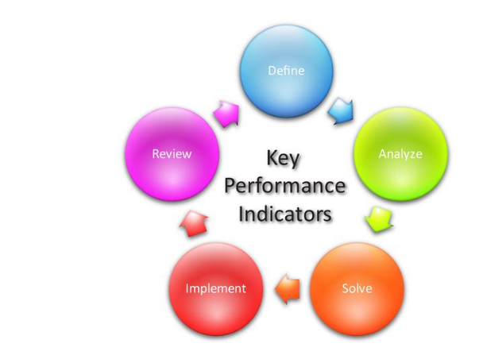

La accesibilidad web tiene como objetivo lograr que las páginas web sean utilizables por el máximo número de personas, independientemente de sus conocimientos o capacidades personales e independientemente de las características técnicas del equipo utilizado para acceder a la Web.
La necesidad de que la Web sea universal y accesible por cualquier persona está presente desde el principio de la Web, ya que era un requisito contemplado en su diseño por su creador Tim Berners-Lee:
En la actualidad, no existe una definición formal y totalmente aceptada del concepto de accesibilidad web. En este sitio web puedes encontrar varias definiciones que existen. También puedes leer una pequeña introducción donde se explica que la Web ofrece oportunidades sin precedentes a las personas con discapacidad, pero si no se lleva cuidado, la falta de accesibilidad creará graves barreras que impedirán su uso.
Además, también existen una serie de mitos sobre la accesibilidad web que perduran desde hace años. Estos mitos se pueden resumir en que la accesibilidad web es cara y supone un coste extra en el desarrollo de un sitio web, sin que los beneficios sean importantes. Además, otro de los mitos que perdura es creer que la accesibilidad web sólo beneficia a las personas con discapacidad. Los beneficiarios de la accesibilidad web son todo el mundo.
Para lograr la accesibilidad, se han desarrollado diferentes pautas o guías que explican cómo se tienen que crear las páginas web para que sean accesibles.

Esta aplicación le enseñará todo lo necesario para aprender a hacer una página web construida con HTML5, el último de los estándares para la web.
Además, podrá aplicar estilos gracias a toda una sección dedicada al CSS3, lo que le permitirá hacer que su página sea vistosa.
Por otro lado, podrá hacerla accesible, gracias a las consideraciones incluidas en este manual en cuanto a tan importante tema.
Y por último, será capaz de potenciar la visibilidad de su sitio web gracias a la información respectiva al SEO.
Para acceder a cada sección, pulse en el botón del menú, en el margen superior. Podrá ver este manual y la información del mismo, incluyendo creadores.
MANUAL HTML5 ha sido creado por:
- Pedro Sánchez Garrido
- Kumar Baltar López-Cózar
- José Guerrero Gallego
- Miguel Ángel Millán Mena
- Juan Carlos Chica Ureña
Todos los derechos reservados.
Estructura Básica
DOCTYPE
El documento tiene que empezar con la etiqueta <!DOCTYPE html> para definir el documento que es.
HTML
El siguiente paso es abrir el documento html con la etiqueta <html lang="es">. El atributo lang sirve para hacer referencia al lenguaje empleado, en nuestro caso "es".
HEAD
Ahora hay que definir la cabecera del documento con la etiqueta <head>
Dentro de <head> debe contenerse la etiqueta <meta charset="UTF-8"> para definir la codificación del documento haciendo referencia con el atributo charset. También debe ir la etiqueta <title> para especificar el título del documento, el cuál aparecerá en la barra del navegador.
BODY
Por último, hay que definir el cuerpo de la página, es decir, el contenido visible en el navegador. Para ello utilizamos la etiqueta <body>
De manera que la estructura debe quedar así:
<!DOCTYPE html>
<html lang="es">
<head>
<meta charset="UTF-8">
<title></title>
</head>
<body></body>
</html>
La Etiqueta <strong>
La etiqueta <strong> </strong>> normalmente aparece en negrita e indica queel exto de acontinuacion debe destacar sobre el resto.
En muchos casos se utilizan una etiqueta de apertura strong y otra de cierre /strong
la cual es la misma etiqueta pero con una barra.La etiqueta <strong> </Strong>> conforman un elemento HTML.
Hay elementos que requieren una única etiqueta debido a que eflejan un único
elemento o un elemento vacío.
Todas las etiquetas HTML se escriben en minúsculas. Las etiquetas son anidables.
Parémetros de las etiquetas
Los parámetro son modificadores que se introducen entre los signos de apertura y cierre para definir matiz concreto
Etiquetas de formato de texto
//em y /em son una etiqueta para enfatizar un texto
y habitualmente se representa en cursiva.
i e /i hacen que un texto se muestre en cursiva, con una estética similar
al caso anterior aunque con un significado distintto.
Las etiquetas HTML podemos anidarlas para obtener un texto doblemente
destacado, es decir a la vez que en cursiva, también en negrita.
Ejemplo:
El bloque siguiente es muy importante
Y se hace de la manera siguiente:etiquetas de apertura p "el texto" strong y em y "texto" etiquetas de cierre /em /strong y /p
Al anidar varias etiquetas es importante mantener el orden apertura y de cierre; se cierran primero la última en abrirse.
A parte de éstas etiquetas también tenemos otras destinadas a:
(dfn /dfn) es una etiqueta para definiciones; Esto es un ejemplo aplicando la etiqueta para definiciones.
(code /code) es para bloque enteros de código informático
Ejemplo de uso de code;
import java.util.Scanner;
public class Cadena{
public static void main(String[] args){
String cadenai = "", cadenaf = "";
int num_caracteres = 0, desde = 0, hasta = 0;
Scanner entrada = new Scanner(System.in);//creación del tipo objeto
System.out.print("Introduce una cadena de caracteres");
cadenai = entrada.nextLine();
num_caracteres = cadenai.length();
System.out.println("la cadena de caracteres " + cadenai + " posee " + num_caracteres + " caracteres");
System.out.print("desde?");
desde = entrada.nextInt();
System.out.print("hasta?");
hasta = entrada.nextInt();
cadenai = cadenai.substring(desde,hasta);
System.out.println("la nueva cadena es: " + cadenaf);
}
(samp /samp) es una etiqueta para indicar ejemplos
Esto es un ejemplo aplicando samp
(kbd) es una etiqueta para texto de eclado;
Ejemplo: buscando a nemo
(var) es una etiqueta para variables;
entrada=8
(cite) etiqueta para una cita
Ejemplo:Esto es una cita
Cada una tiene una apariencia concreta y son fáciles de modificar.
Pero lo importante es que el texto adquiere un significado específico,
dependiendo de las etiquetas que la rodeen.
Estilos
Todo lo que tiene que ver con la estética de la web se deja a CSS, para la separación entre el contenido y su apariencia.
CSS son hojas de estilo en cascada que nos proporcionan todos los elementos que necesitemos para modificar la apariencia de nuestra página web.
En principio con CSS definiremos cómo debe mostrarse un elemento HTML concreto, estableciendo los aspectos habituales como el tamaño, color, tipografía, bordes...etc.
Así pues con los etilos separamos el disño de su contenido.
Las dos ventajas principales de esto son:
Automáticamente se vuelve muy sencillo modificar cuestiones de diseño a través de un sitio webcomplejo.
Podemos cambiar el tipo de letra de todo un portal de web con tan solo modificar una línea de un arrchivo.
Las páginas son más limpias, cargándose más rápido, contando con menos errores y
sobre todo más accesibles a todos los sentidos.
Aplicar estilos
Los estilos se pueden aplicar de tres fomas diferentes:
Estilos en un archivo externo: definimos una serie de reglas CSS en un archivo, que enlazaremos desde nuestra página web en la cabecera de la misma. Este es el método más aconsejado de trabajo.
Estilos en la cabecera de la página web: de nuevo en la cafetera podemos indicar las reglas Css que necesitemos, afectando de este modo sólo a la página web.
Estilos en la página web: podemos aplicar estilos dentro de un elemnto concreto de la pagina web, mediante el parámetro style
Centrandonos en la tercera vía:
Ejemplos
¿Que es un párrafo?
Un párrafo de un texto se compone de un bloque de texto independiente con una apariencia concreta, delimitado por un espacio superioir y otro inferior
Vamos a modificar el aspecto de estos dos elementos html tan solo aplicando el elmento style:
¿Qué es un parrafo?
En este caso hemos establecido dos elementos CSS, color para definir un tono rojo y el tipo de letra mediante font-family.Un parrafo de texto se compone de un bloque de texto independiente con una apariencia concreta, delimitado por un espacio superior y otro inferior.
En este caso hemos indicado que todo el párrafo se mostrara en cursiva(font-style: italic) y un tono azul, mediante el valor color.Como observamos, cada par de elemntos CSS especifican su valor correspondiente tras un signo de dos puntos y se separan del siguiente medinate un punto y coma; así podremos añadir tantas variaciones como necesitemos.
La etiquta span
La etiqueta (span) sirve para cuando queremos modificar sólo una frase dentro de un párrafo o una simple palabra, a diferencia del ejemplo anterior, enla cual modificábamos el árrafo entero.
Utilizando el ejemplo anterior:
Qué es un párrafo
En este caso hemos hecho que el término aparezca en verde, mientras que el resto mantiene su apariencia predeterminada y para ello hemos usado; <h5 Qué es un span style="color:rgb(0,153,0);"párrafo/span /h5 >Un párrafo de texto se compone de un bloque de texto independiente con una apariencia concreta, delimitado por un espacio superior y otro inferoir
En este caso hemos matenido el color azul para todo el texto, pero una parte de él se mostrará de color rojo y en negrita(font-weight:bold). Hemos usado;<p color="rgb(20,20,200);">Un párrafo de texto se compone de un span style="font-weight:bold;color:rgb(255,0,0);">bloque de texto independiente/span con una apariencia concreta, delimitado por un espacio superior y otro inferoir/p>>Elementos de bloque o en línea
Elementos a nivel de bloque:
Los elementos en HTML normalmente son elementos a"nivel de bloque" o elementos "en línea". Un elemento a nivel de bloque ocupa el espacio entero de su elemento padre(el contenedor), creando así un "bloque".
HTML Este parrafo es un elemento en bloque, su fondo ha sido coloreado para mostrar el padre del párrafo
CSS
p {background-color: #8ABB55;}
Uso
Los elementos de bloque sólo deben aparecer dentro del elemento (body).
Elementos en bloque vs en linea
Las diferencias entre en-bloque y en-línea:
Formato:
Por defecto lso elementos en-bloque comienzan en nueva línea.
Modelo de contenido:
Generalmente, los elemntos en-bloque pueden contenr elementos en-línea y otros elementos en-bloque.
Inherentes dentro de esta distinción de estructura es la idea de que los elemntos en-bloque crean estructuras más grandes que lso elementos de linea.
Elementos
Lista de los elementos en-bloque:
address: Información de contenido
article: contenido de articulo
aside: contenido adicional
audio: reproducir audio
blockquote: bloque de cita
etc...
Elementos en-línea
Ejemplo en línea:
HTML
Modelo de contenido:
Generalmente, los elementos en-línea, sólo pueden contener algun dato u otros elementos en-línea.
Formato:
Por defecto, los elementos en-línea no empiezan con un retorno de carro(nueva línea).
CSS
Inline vs. block-level
Elementos:
Los siguientes elementos son "inline":
b,big,i,small,tt...
abbr,acrony, cite, code, dfn ...
a, bdo,br, img, map, object...
button, input, label, select..
Etiqueas básicas de texto
Títulos y párrafos
El lenguaje html es muy sensible a su organización, por lo que primero, debemos saber como estructurar los títulos y como definir los parráfos del texto.
Parráfos
Las etiquetas <p></p> se emplean para definir un bloque de texto que se comporta como un párrafo. Ninguna porción de texto dentro de una página puede quedar suelta e irán rodeadas de estas etiquetas. El mismo editor de texto puede ocuparse de hacerlo por nosotros aunque en algunas ocasiones nos deberemos de asegurar que es lo que sucede.
Títulos
Las etiquetas <h1></h1> se emplean para definir un texto como título indicando
que este es la cabecera, (la "h" viene del término "header" que es cabecera en inglés).
Junto a la "h", viene un numero por el cual podemos ir dando de mas importancia a menos
a los títulos que vayamos introduciendo: (<h1></h1>, <h2></h2>, <h3></h3>, etc...)
Una página bien diseñada debe de contar con estos encabezados para la correcta organización
de los distintos apartados del texto de la página, para poder diferenciar de forma correcta
sus distintos niveles. Cada uno de los diferentes niveles de encabezado tiene un diferente
tamaño y tipo de letra lo cuál se podrá modificar como veremos un poco mas tarde.
Saltos de línea y líneas separadoras
Para completar la separación de texto contamos con dos etiquetas mas:
<br/>: Inserta un salto de línea en el texto. No genera un nuevo párrafo,
sino que parte la línea en dos. Es un elemento puntual el cual no requiere de una
etiqueta que lo cierre.
<hr/>: Inserta una línea de texto, pero mostrando una línea horizontal visible.
Etiquetas semánticas o de estructura
En las páginas webs actuales no nos limitaremos a definir todo el texto solo con las
etiquetas <hx> y <p> ya que con esto se consigue una estructura demasiado
general, para las personas con discapacidad o para los propios buscadores de internet.
Los conjuntos actuales nos proporcionan un conjunto de elementos HTML para poder contener
los contenidos que se suelen encontrar en una página web. Así podemos indicar que tipo de
contenido se encuentra en cada parte de la página web.
Estas son las siguiente etiquetas:
<header> y </header>: Para definir un bloque de contenido que hará las veces
de título de la página web.
<footer> y </footer>: Define un pie de página en nuestra web.
<nav> y </nav>: Donde incluiremos diferentes enlaces para que el usuario pueda
desplazarse entre las partes del contenido de nuestro sitio web.
<section> y </section>: Para definir grandes secciones de nuestra página.
><article> y </article>: Marca los límites de un contenido específico, como
una entrada de un blog o un artículo en general.
<aside> y </aside>:Se emplea para definir un contenido que está relacionado con
la página, pero que se debe considerar como separado del contenido principal.
Junto a estos elementos contamos con algunos mas:
<hgroup> y </hgroup>: Para cabeceras de secciones.
<figure> y </figure>: Para contenidos multimedia.
<time> y </time>: Para definir la fecha del contenido.
<mark> y </mark>: Para definir textos destacados para referencias.
Listas
Las listas permiten crear párrafos agrupados y alineados mediante símbolos como viñetas o números y además crean párrafos alineados de forma especial para su correcta visibilidad.
Listas con viñetas
Las listas con viñetas se deben englobar dentro de un elemento ul (de unordered list, lista no odenada, después cada párrafo de la lista estará dentro de elementos de tipo li (de list item, elemento lista).
Ejemplo:
<ul>
<li>Agua<li>
<li>Vino<li>
<li>Cerveza<li>
</ul>
Resultado:
- Agua
- Vino
- Cerveza
Listas numéricas
Las listas numéricas aparecen dentro del elemento ol (de orderer list, lista ordenada), después cada párrafo de la lista estará dentro de elementos de tipo li, al igual que las anteriores. La diferencia ahora es que cada párrafo con li, aparece con un número y no con una viñeta. Ejemplo:
<ol>
<li>Agua<li>
<li>Vino<li>
<li>Cerveza<li>
</ol>
Resultado:
Lista de bebidas
- Agua
- Vino
- Cerveza
Listas anidadas
Es posble meter unas etiquetas con otras, por ejemplo:
<ul>
<li>
No alcohólicas
<ul>
<li>Agua<li>
</ul>
</li>
<li>
Alcohólicas
<ul>
<li>Vino<li>
<li>Cerveza<li>
</ul>
</li>
</ul>
Con el resultado:
-
No alcohólicas
- Agua
-
Alcohólicas
- Vino
- Cerveza
También es posible anidar mezclando tipos de listas:
<ol>
<li>
No alcohólicas
<ul>
<li>Agua<li>
</ul>
</li>
<li>
Alcohólicas
<ul>
<li>Vino<li>
<li>Cerveza<li>
</ul>
</li>
</ol>
Con el resultado:
-
No alcohólicas
- Agua
-
Alcohólicas
- Vino
- Cerveza
Lista de términos
Permite crear una lista de definiciones de términos. En ellas se indica el término a definir y su definición. Ejemplo:
<dl>
<dt>Windows</dt>
<dd>
Sistema operativo de <strong>Microsoft</strong> disponible para PC, disponible en versiones de 32 y 64 bits y para servidoes, ordenadores e incluso tabletas y móviles<br/> La última versión es la 8 y la 2012 para servidores.
</dd>
<dt>Linux</dt>
<dd>
Sistema operativo de código abierto disponible en numeroas distribuciones gratuitas y de pago. Es la base del sistema <strong>Android</strong>
</dd>
<dt>Mac OS</dt>
<dd>
Sistema operativo de los ordenadores de la empresa <strong>Apple<strong>
<br/>
La última versión es la <strong>Snow Lion</strong>
</dd>
</dl>
Resultado:
- Windows
-
Sistema operativo de Microsoft disponible para PC, disponible en versiones de 32 y
64 bits y para servidores, ordenadores e incluso tabletas y móviles.
La última versión es la 8 y la 2012 para servidores. - Linux
- Sistema operativo de código abierto disponible en numerosas distribuciones gratuitas y de pago. Es la base del sistema Android.
- Mac OS
-
Sistema operativo de los ordenadores de la empresa Apple.
La última versión es la Snow Lion.
Tablas
Definición de una tabla
Las tablas son elementos recurrentes dentro del mundo de la informática, siendo una parte fundamental en programas como los basados en hojas de cálculo, las bases de datos o los procesadores de texto. En HTML es similar, puesto que este lenguaje nos permite crearlas, como veremos, a nuestro antojo.
Para la creación de una tabla, será necesario el uso de varias etiquetas, que nos permitirán definir la propia tabla, las filas y columnas y otros atributos que nos permitirán adaptar el aspecto de ésta al que deseemos.
Para la creación de una tabla, usaremos: <table>, la cual se deberá cerrar con </table> al final de todo lo relacionado con cada tabla. Es por ello que entre estas dos etiquetas se encontraran tanto atributos como todos los datos que la conformen.
Aspectos básicos de una tabla
Con las etiquetas de la tabla ya definida convendrá definir una fila con <tr> y </tr>, la cual contendrá información de todas las celdas, dispuestas en columnas y definidas con la etiqueta <td> y </td>. Junto a ello, en la etiqueta <table> incluiremos el atributo "border=X" donde X será un número y denotará el ancho del borde de la tabla. Asimismo, podremos usar la etiqueta rules=Y con los siguientes parámetros.
- none: No habrá líneas en los bordes.
- groups: Únicamente líneas en los grupos.
- rows: Los bordes serán entre filas.
- cols: Los bordes serán entre columnas.
- all: Se dibujarán todos los bordes dentro de la tabla.
Por ejemplo:
<table border=1>
<tr>
<td></td>
<td>Lunes</td>
<td>Martes</td>
<td>Miércoles</td>
<td>Jueves</td>
<td>Viernes</td>
<tr>
<tr>
<td>8:15</td>
<td>Programación</td>
<td>Programación</td>
<td>FOL</td>
<td>Programación</td>
<td>Lenguajes de Marcas</td>
<tr>
<tr>
<td>9:15</td>
<td>Programación</td>
<td>Programación</td>
<td>Entornos de Desarrollo</td>
<td>Programación</td>
<td>Lenguajes de Marcas</td>
<tr>
</table>
Veamos el resultado:
| Lunes | Martes | Miércoles | Jueves | Viernes | |
| 8:15 | Programación | Programación | FOL | Programación | Lenguajes de Marcas |
| 9:15 | Programación | Programación | Entornos de Desarrollo | Programación | Lenguajes de Marcas |
Celdas de cabecera
En ciertas ocasiones, conviene que nuestra diferencie las celdas por aquellas que reflejen la cabecera del
resto de la celda.
Para ello, en aquellas que lo necesitemos, sustituiremos la etiqueta <tr> por
<tr>
y su correspondiente finalización.
Basándonos en el mismo ejemplo, celdas como la que contiene a Lunes u 8:15 pueden adoptar esta forma, quedando la tabla así:
| Lunes | Martes | Miércoles | Jueves | Viernes | |
|---|---|---|---|---|---|
| 8:15 | Programación | Programación | FOL | Programación | Lenguajes de Marcas |
| 9:15 | Programación | Programación | Entornos de Desarrollo | Programación | Lenguajes de Marcas |
Títulos en tablas
HTML permite, usando la etiqueta <caption> poner un título a una tabla, de forma simple. Veámoslo con otro sencillo ejemplo:
<table border=1>
<caption>Título de mi tabla</caption>
<tr>
<th>Proyecto</th>
<td>Manual HTML</td>
<tr>
<tr>
<th>Versión</th>
<td>1.0</td>
<tr>
</table>
| Proyecto | Manual HTML |
|---|---|
| Versión | 1.0 |
Agrupación de elementos en una tabla
En ciertas ocasiones, conviene crear tablas que diferencien de forma más clara sus distintas secciones. HTML nos lo pone fácil, gracias a etiquetas que nos ayudarán, de forma sencilla, a diferenciar dichas secciones, tanto a la hora de crear la tabla como en su visualización.
Para ello, disponemos de tres etiquetas:
- <thead></thead>
- <tfoot></tfoot>
- <tbody></tbody>
<table border=1 rules=groups>
<caption>Commits hechos</caption>
<thead>
<tr>
<th></th>
<td>Desarrollador 1</td>
<td>Desarrollador 2</td>
<tr>
</thead>
<tfoot>
<tr>
<th>Total</th>
<th>14</th>
<th>13</th>
<tr>
</tfoot>
<tbody>
<tr>
<th>Semana 1</th>
<th>6</th>
<th>9</th>
<tr>
<tr>
<th>Semana 2</th>
<th>8</th>
<th>4</th>
<tr>
</tbody>
</table>
El resultado sería:
| Desarrollador 1 | Desarrollador 2 | |
| Total | 14 | 13 |
| Semana 1 | 6 | 9 |
| Semana 2 | 8 | 4 |
Combinación de celdas
En ciertas tablas, necesitaremos combinar celdas, para ello, dentro de los <td> podremos usar los atributos colspan="X" y rowspan="Y", los cuales unirán, en el primer caso, celdas hacia la derecha, mientras que en el segundo serán celdas hacia abajo, según el número que introduzcamos en X e Y.
Tablas dentro de tablas
Para ofrecer mayor posibilidad al creador de una página web, se ofrece la posibilidad de crear una tabla dentro de otra tabla. Para ello se introducirán todas las etiquetas de una tabla dentro de un <td> o <th>.
El modelo de cajas
Cada elemento HTML que podemos encontrar en una página web se encuentra rodeado de una caja con varias propiedades que pueden ser modificadas.
Altura y anchura de una caja
Cada elemento HTML de una página web cuenta con una anchura y una altura específica. En muchos casos a esas dimensiones se las proporciona el propio contenido como podría ser una párrafo o imagen. Esos valores pueden ser (width) y (height) pueden ser modificados gracias a las hojas de estilo y sus propiedades del mismo nombre. Estos valores van acompañados de unos valores numéricos que les dotan de valor, el cual se expresa de forma gráfica en la página web: body {
principal { width: 400px;
background-color: rgb(0, 126, 0);
}Margen
Comenzaremos con la imagen, con tan solo modificando su margen veremos como esta se distancia del resto de elementos. En este caso se usará la propiedad margin seguida de un valor numérico o de un porcentaje:
img{padding:5px;}
Relleno
Probaremos ahora a modificar su relleno, es decir, la distancia imaginaria que habría entre un hipotético borde y la imagen propiamente dicha. Para ello y al igual que anteriormente probaremos con un valor menos exagerado:
img{padding: 5px;}
Borde
Si recargamos la página con este pequeño ajuste podremos oberservar que en efecto la imagen se separa algo más, (que son 5 píxeles por cada lado). Pero no es posible distinguir donde llega a acabar el efecto de la imagen y comienza el relleno. Para poder diferenciar dichos valores, deberiamos de tener un borde en la imágen:
img {border-width: 2px;
border-style: solid;
border-color: #007000;
} Con la experiencia que tenemos ya de CSS podemos ver que hace cada párametro y como afecta al texto, siendo el primero el que modifica el grosor del borde, el segundo el tipo de línea y el último su color.Laterales
Las propiedades margin, padding y border se pueden llegar a utlizar para modificar los laterales de una caja, con independencia de todas las demás. Añadiendo a cada uno de ellos: -left, -right, -top y bottom En la figura hemos aplicado estas propiedades para el título de la página, para tomarlo como ejemplo: h1 {
margin-top:40px;
padding-left: 5px;
padding-right:5px;
border-top-width: 2px;
border-top-style: dotted;
border-top-color: #007000;
border-bottom-width: 2px;
border-bottom-style: double;
border-bottom-color: #007000;
}Más opciones para los bordes
Para los bordes podemos definir tres propiedades: anchura, estilo y background-color, la anchura y el color las podemos definir con la medidas habituales. El estilo por su parte tiene una serie de valores concretos para él.
dotted: punteado.
dashed: línea discontinua.
solid: línea continua.
double: línea doble.
groove: tipo de relieve.
ridge: tipo de relieve.
inset: tipo de relieve.
outset: tipo de relieve.
none: empleado para indicar que no habrá borde. Como ya ocurría con otras propiedades, podemos reagrupar los valores referidos a los bordes en una sola propiedad génerica llamada; border: img { border: 2px solid #007000;}
Esquinas rodondeadas
Con los estilos actuales podemos trazar bordes alrededor de una figura y que tenga sus esquinas redondeadas. Esto se consigue con la propiedad border-radius, acompañada con su valor númerico correspondiente. img {
border: 2px solid #007000;
border-radius:25px;
}Sombras
Las modernnas hojas de estilo proporcionan a cualquier elemento, la capacidad de proyectar una sombra. Ya tuvimos ocasión de ver como funcionaba con el texto, pero además, box-shadow nos permite añadirle sombra a cualquier caja de nuestra web, lo que hace posible poder añadirselo a culquier elemento.table {box-shadow: 8px 8px 6px #aaaaaa; }
Los elementos que se ven en la línea, son similares a las sombras que se realizan para el texto; horizontal, difuminado y color de sombraElementos flotantes
Los elementos elementos de una página pueden reubicarse tanto a la izquierda como a derecha con tan sólo emplear la propiedad float, haciendo que el resto del contenido se sitúa alrededor de ese elemento. En el siguiente ejemplo la regla:
img { float:left;}
Provoca que el texto se sitúe alrededor de la imagen.Capas: etiqueta div
La etiqueta <div> se emplea para definir un bloque contenido o sección para aplicar diferentes estilos para realizar sobre ese bloque específico. Mediante este ejemplo podemos observar un ejemplo de la etiqueta div: <div>
<h1>Índice</h1>
Página principal</br>
Material multimedia</br>
Autores<div>
</div> Hemos empleado la etiqueta para crear un bloque que hará las veces de índice de contenidos. Visualmente la etiqueta no provoca ningún cambio pero en la estructura del documento se ha echo una división muy importante. Añadiremos una nueva modificación para ver mejor que está pasando:<div> style="border: 2px solid rgb(204, 102, 204);">
<h1>Índice</br>
Página principal</br>
Material multimedia</br>
Autores</br>
</div>
Eso sería todo del div.La etiqueta span
Justamente después de un </div> se comienza con una nueva línea, es por ello que podemos diferenciar esta de la etiqueta <span>. Con ella se consigue un efecto simialr pero en el interior de un párrafo. Recordemos que span se utiliza con frecuencia para aplicar estilos en el interior de un bloque de texto.
Diferenciando las etiquetas div y span
Adicionalmente estas dos etiquetas van acompañadas de uno o dos parámetros que se utilizan para identificar al bloque correspondiente.
id: Establece un identidicador único por bloque que permite identidicarlo sin equivocarnos.
class:Es similar al id, pero con la ventaja de que este puede repetirse así podemos tener varios <div> diferentes pero con clase común. Usando estas clases podemos ir añadiendole diferentes estilos CSS y también hacer que actúen de forma diferente.
Podemos ver aqui un uso claro de uso de estas etiquetas:<div id="indice">
</br>indice
</div>
<div class="destacado">
Este texto se destaca mediante un estilo.
</div>
<div id="articulo15" class="articulos_estandar">
Texto de un artículo
</div>
Las etiquetas id y class pueden ir entremezcladas sin ningún problema mientras se siga la norma; los id son los únicos que pueden ir en el interior de la página, mientras que los class pueden repetir varios elementos que tomen un mismo estilo.Ejemplos de usos de cajas
Hasta el momento hemos podido comprobar que nuestros elementos, han estado funcionando de forma muy parecida a la par que secuencial. A continuación veremos un pequeño ejemplo de lo que podemos encontrarnos en una pagina web respecto a estos elementos.
<!Doctype html>
<html>
<head>
<meta http-equiv="content-type" content="text/html; charset=UTF-8">
<tittle > floating </tittle>
<link href="floating.css" rel="stylesheet" type="text/css">
</head>
<body>
<div id="bloque1">Bloque 1</div>
<div id="bloque2">Bloque 2</div>
<div id="bloque3">Bloque 3</div>
<div id="bloque4">Bloque 4</div>
<body>
Con esos 4 bloques simples conseguimos aplicarle los estilos siguientes y así conseguir el resultado de la figura.body{
background-image: url("resources/fondo.png");
font-family: Arial, Helvetica, sans-serif;
{
div{
width: 120px;
height: 80px;
background-color: rgb(82, 108, 142)
color: rgb(245, 255, 244);
margin: 10px;
border-radius:5px;
text-align: center;
}
La propiedad display sirve para cambiar el tipo de visualización de los elementos de la página en CSS. Los elementos delimitados por <div> siempre llevarán salto de línea antes y después. Si se le añade la propiedad: display:block a algún valor <div> este tendrá como característica que siempre llevan salto de línea antes y después. Con display:inline los elementos se sitúan horizontalmente, perdiendo saltos de línea y dimensiones. Mientras tanto usando inline-block se distribuyen de forma horizontal y manteniendo sus propiedades de bloque sin modificación alguna.Elementos no mostrados
Aplicando none:
div#bloque2 { display:none;}
y el uso de JavaScript podemos observar que al emplearlo en navegadores resulta sencillo modificar durante el funcionamiento de la página web una propiedad concreta de una hoja de estilos. ¿Y si probamos a introducir un script en nuestra cabecera?:<!Doctype html>
<html>
<head>
<meta http-equiv="content-type" content="text/html; charset=UTF-8">
<tittle > floating </tittle>
<link href="floating.css" rel="stylesheet" type="text/css">
<script language="JavaScript">
function mostrar(){
}
</script>
</head>
</body>
<div id="bloque1" onmouseover="mostrar()">Bloque 1</div>
<div id="bloque2">Bloque 2</div>
<div id="bloque3">Bloque 3</div>
<div id="bloque4">Bloque 4</div>
</body>
</html>
Modificando el bloque 1 le hemos añadido un parámetro llamado onmouserver. Este se encarga que a partir del </div> el bloque 1 responderá al paso del ratón por el. Esto dará como resultado la ejecución de una pequeña acción llamada mostrar, la cual localizará el bloque 2 y modificará su propiedad display.Los formularios nos permiten, en una página web, recabar datos provenientes del usuario, los cuales son enviados y procesados en el servidor.
Para crear un formulario, usaremos la etiqueta <form> la cual se servirá de dos atributos para su control.
La primera de los atributos es <action>, y nos sirve para indicar la URL que procesará los datos introducidos.
Por otro lado, nos encontramos con <method>, que indica cómo se enviarán dichos datos, si bien con GET, el cual genera una cadena de búsqueda en la URL.
POST, por su lado, se encarga de hacerlo de forma más oculta.
Ejemplo:
<form action="control_form.php" method="GET">
//Instrucciones
</form>
Cuadros de texto, tipo "text"
Supongamos que queremos un cuadro de texto, sobre el ejemplo anterior, que nos permita intruducir nuestro nombre.
Para ello, partiendo del código anterior, introduciremos la instrucción <input type="text" name="nombre" />
Quedaría tal como sigue:
Este cuadro, contiene a su vez, algunos atributos como:
| Atributo | Tipo valor | Uso |
| <maxlength> | Número | Indica el número máximo de caracteres a introducir. |
| <size> | Número | Indica la anchura, en caracteres, del cuadro de texto. |
| <value> | Texto | Rellena el cuadro con un texto inicial. |
Cuadros de texto, tipo "password"
Usando los mismos atributos que en el tipo "text", con password el texto introducido se oculta en puntos o asteriscos.
Asimismo, conviene usar el método POST (explicado anteriormente), además del cifrado de la propia contraseña, para mayor seguridad.
Botones
Los botones son controles del formulario, los cuales nos permiten realizar distintas acciones en el mismo.
Por ejemplo, tenemos los tipos summit o reset, que nos permiten enviar la información del formulario y resetearlo, respectivamente.
Para su uso, añadiríamos el código en nuestro formulario, tal como sigue:
<input type="submit/reset" value="texto de este botón" />
Junto con ello, encontramos un tipo genérico button, que no es usado para envío de información, sino para capturar la pulsación y ejecutar código (JavaScript).
Botones de radio
En multitud de sitios web encontramos registros, en los cuales tenemos que seleccionar aspectos como nuestro sexo, para ello nos sirve estos botones:
Usaremos el input type="radio", al que le indicaremos un nombre y un valor. Por otro lado, podemos incluir el atributo chequed="chequed" (no admite variaciones).
Con este aparecerá, donde lo incluyamos, el botón en cuestión seleccionado por defecto.
Casillas de verificación
Su uso es idéntico a los botones de radio, solo que cambia el type="radio" a "checkbox". Con ello, veremos estas casillas.
Cuadros combinados
Los anteriores tipos, para pocas opciones son ideales, sin embargo, supongamos que tenemo que elegir una provincia de entre todas las de tu país.
Para ello existen los cuadros combinados, y su sintaxis es la que sigue:
<select name="provincia">
<option value="Al">Almería</option>
<option value="Co">Córdoba</option>
</select>
Se puede usar la etiqueta optgroup, que agrupa a varias opciones dentro de un grupo
<optgroup label="Andalucía">
Las distintas opciones....
</optgroup>
Cuadro para la selección de un archivo
Muy utilizado en plataformas como foros o educativas, estos cuadros permiten cargar un archivo a la página web.
Su tipo es "file", al que hay que asignarle un name="loQueSea"
Suele ir acompañado de otro botón que ejecute el código para la subida del archivo al servidor.
Cuadro de texto multilínea
Siguiendo la idea de los foros, en ellos encontramos lugares donde podemos escribir nuestros mensajes.
Estos pueden estar implementados haciendo uso de la etiqueta <textarea name="" id="" cols="30" rows="10"></textarea>
col indica el número de columnas, mientras que rows el número de filas del cuadro.
HTML5 y las opciones de introducción de datos
HTML5 ha supuesto una mejora en cuanto a facilidad para la programación básica de páginas web, ya que implementa nuevos atributos que nos permiten restringir que es lo que se puede introducir, o no, en un cuadro.
Por ejemplo, tenemos los tipos time, datetime o month, dedicados a la hora, fecha y hora y mes, y comprueba que existe.
También tenemos los tipos search, preparado para búsquedas, tel para teléfonos o color, que despliega un control de selección de colores, en hexadecimal #XXXXXX
Finalmente, existe el atributo required, que obliga al usuario, en un cuadro, a ser rellenado.
Hipervínculo:
Es un elemento de un documento electrónico que hace referencia a otro recurso.
Enlaces externos
Los enlaces externos son aquellos que creamos en nuestra web, para que otros usuarios puedan acceder a otros sitios web, o a otros puntos de la misma web. Para ello necesimanos la dirección única de internet(URL, del sitio).Para crear elnaces, ha que elejir el objeto a ser enlace, ya pueden ser frase, imagen, palabra..., de manera que cuando el usuario clique sobre este objeto, el navegado lo llevara al nuevo destino.
Para crear enlaces se utiliza la etiqueta a, /a y el parámetro href para indicar la dirección a la que queremos acceder.
Ejemplo
Para localizar el significado de una palabra al diccionario de RAE . Luego regresa a nuestra página.
Referencias relativas y absolutas
Referencia absoluta:
Cuando al enlazar otros sitios web, necesitamos indicar la URL completa, es decir la dirección completa comenzando por su http://, con el nombre del destino y
con todas las carpetas y subcarpetas que nos permitan identificar la pagina de manera inequívoca.
Esto es debido a que si la URL está completa, sabemos que apunta a una página específica entre miles de millones de páginas de internet.
Referencia relativa:
Cuando los enlaces toman sentido dependiendo de de su posición en las carpetas.
Ejemplo:
si quiero enlazar dos paginas que se encuentra en la misma carpeta, se puede hace con el método absoluto:
Accede a la presentación
o mediante un enlace relativo.
Accede a la presentacion
Los dos motivos clave por los que debemos actuar así en los enlaces entre páginas de un mismo portal:
-Si usamos la URL absoluta, nos obligamos a indicar de antemano la dirección completa del sitio web;algo que quizás no tengamos mientras estamos preparando las páginas y que además nos obligaría a colocar las páginas en internet para poder probarlas.
-Si en un momento dado el sitio web cambia de dominio o lo trasladamos a otra parte, todos los enlaces dejarían de funcionar, al hacer referencia al sitio antiguo. Por el contrario, si mantenemos los enlaces como relativos, todo el sitio funcionará sin problema se coloque donde se coloque.
Las tres tecnicas para direccionar un enlace son:
Si las páginas están en la misma carpeta:solo indicamos el nombre de los archivos.
Si está en una o varias subcarpetas: indicamos las subcarpetas con una / como separador( documentos/2014/proyecto.html)
Si está en una o varias carpetas anteriores a la actual: utilizamos ".." para retroceder en la estructura(Ejemplo: ../../propuestas.html nos llevaría a un archivo situado en dos carpetas antes.)
También podemos mezclar ".." y "/" para obtener toda la versatilidad necesaria. (Ejemplo: ../2013/proyectos)
Destino u objeto del enlace
Al crear un enlace, el lugar en que se debe desplegar el nuevo contenido al que vamos a acceder, se puede variar.
Normalmente el usuario decide, o se matien siempre la misma venana, pero mediante el parámetro target podemos influir en esa decisión, indicando un destino determinado.
La siguiente dirección, hace que la página web no se abra en la ventana habitual, sino en una ventana nueva o en una pestaña, dependiendo del navegador.
Prueba en el buscador
Junto a _blank(abrir en nueva pestaña o ventana) y _self(que no se suele emplear porque es el valor predeterminado que indica que se abra en la misma ventana)
_parent y _top indican que la pagina se debe abrir en el marco anterior o en el espacio principal de la página. Se suelen emplear al trabajar con los marcos que se crean con el elemento "iframe", que permite mostrar páginas dentro de páginas.
iframe para crear maros y que permite mostrar páginas dentro de páginas.
Anclas y enlaces internos
La creación de enlaces intermos dentro de una página web nos permite realizar saltos, dentro de una misma página, a diferencia de lugares de la misma.
Ejemplo: http://www.wikipedia.es.
Posiciones enlazables
Antes de poder saltar a un punto específico de una página, necesitamos definir qué puntos serán susceptibles de esos saltos.
Utilizamos la etiqueta "a" seguida del parámetro "name"
-En la etiqueta podemos colocar algún otro elemento HTML:
Capitulo 3
-O de la siguiente manera:
Capitulo 3
-Las dos son válidas.Saltos a enlaces internos
Ahora necesitamos saber cómo podremos acceder a esos enlaces internos. es similar a cualquier referencia de las que hemos hecho hasta ahora, pero añadiendo el nombre del enlace interno precedido
del signo #.
Ejemplo:
-para acceder a uno de éstos enalces, desde la misma página;
Saltar al capitulo 3
-O desde una página diferente;(añadiríamos primero el nombre de la página)
Consultar el equipo
Saltos a la parte superior
Es muy habitaul añadir en páginas largas un enlace similar a éste:
y a lo largo del documento añadir alguna etiqueta de este tipo:
Regresa a la parte superior
Así el usuario tiene un método rápido para subir hasta la parte de arriba de la página.
Correo electrónico
Enlaces a e-mail
Además de http:// para indicar una dirección de internet o fille://para indicar un archivo local,
hay otros identificadores para identificar un tipo concreto de URL. Puede enviaremos un correocons sus impresiones.
mailto:// es el que todos necesitamos conocer, y con el que conseguiremos crear un enlace con un correo electrónico.
Al hacer clic sobre él, se abrirá la aplicación de correo de nuestro visitante para que pueda escribir a esa dirección.
Ejemplo:
Al clicar sobre ese enlace, se despliega nuestra aplicación de correo nuestro correo web, si lo tenemos configurado y podemos enviar un mensaje.
Añadir contenido al mensaje
Un enlace como el anterior se puede mejorar para completar el mensaje. Puede enviaremos un correocon sus impresiones
Podemos añadir algunos valores a la URL, separando el primero con el signo ?.
Cada valor posterior irá separado por el signo &.
subject para el asunto.
body para el cuerpo.
cc para copia.
bcc para copia aculta.
Ejemplo:
Protección del correo electrónico
El incorporrar una cuenta de correo a una página web es una opción muy útil, pero que por desgracia hace que se exponga a los robots que permanentemente peinan la web buscand nuevas direcciones de correo electrónico oara enviar correos no deseados, más conocidos como spam
Por ello, el incorporrar nuestra dirección de correo a la web deberia ser algo muy excepcional.
Consejos:Utilizar una dirección de correo específica para el proyecto, no la personal habitual. Hoy en día hay servidores de correo que hacen una gestión fantástica del spam, deberíamos optar por uno de ello
Podemos optar por no indicar la dirección como un enlace, sino como un texto o como una imagen. Una frase del tipo "Escribeme a la direción pedro en gmail protegerá nuestra dirección al tiempo que permite localizarnos con facilidad.
También contamos con algunas soluciones tecnológicas que emplean Javascript u otras codificaciones para proteger la direción de correo, aunque no son del todo efectivas.
En conclusión, esta via de comunicación es apropiada siempre que se use con precaución.
Elementos Multimedia
El problema del vídeo y el audio
El problema es qye hay muchos formatos de vídeo y audio, además de que cada navegador tiene capacidades distintas para ello.
Por ello hay que instalar plugins para la reproducción de contenido multimedia. De esta forma si incorporamos vídeo a nuestra página:
<a href="video.mpeg">Ver vídeo</a>
El navegador buscará si tenemos el plugin necesario para la reprogucción del vídeo y si no es así, directamente lo descargará a nuestro PC al no poder mostrar el contenido.
Etiqueta embed
Es una etiqueta que se utiliza para colocar elementos que no son HTML (Flash, vídeo, audio, etc...
usa los siguientes atributos
| Atributo | Uso |
| src | URL al recurso que se desea mostrar |
| type | Tipo MIME que indica el contenido del resurso que se incorpora con la etiqueta |
| height | Altura de la ventana que mostrará el recurso |
| width | Anchura de la ventana que mostrará el recurso |
Etiqueta object
Esta etiqueta está orientada a sustituir a la anterior y permite incorporar cualquier tipo de contenido a una página web. Los atributos posibles son:
| Atributo | Uso |
| data | URL al recurso que se desea mostrar |
| type | Tipo MIME que indica el contenido del resurso que se incorpora con la etiqueta |
| height | Altura de la ventana que mostrará el recurso |
| width | Anchura de la ventana que mostrará el recurso |
| usemap | Permite indicar el nombre de un mapa de imágenes (usando #nombre) que actuará sobre el objeto |
| name | Permite indicar el nombre del objeto |
| form | Indica el nombre del formilario al que pertenece este objeto |
Elemento param
Elemento interior a object, que permite especificar parámetros a los plugins de los navegadores encargados de mostrar el objeto. Ejemplo:
<object data="Wildlife.wmv" type="video/x-ms--wmv" width="500" height"300">
<param name="autoplay" value="true" />
</object>
Elemento iframe
La idea es colocaar un documento dentro de otro documento, es decir, incrustar contenido dentro de la página que le hace referencia.
| Atributo | Uso |
| src | URL al recurso que se desea mostrar |
| width | Anchura del objero en nuestra página |
| height | Altura del objeto en nuestra página |
Elemento vídeo
Sólo funciona en HTML 5 y es el métod para incorporar vídeos a una página web.
| Atributo | Uso |
| src | URL al recurso que se desea mostrar |
| width | Anchura del objero en nuestra página |
| height | Altura del objeto en nuestra página |
| autoplay | Usa el valor fijo autoplay para indicar que el vídeo se incia automáticamente en cuanto se descargue |
| loop | Usa el valor fijo loop para indicar que el vídeo se incia automáticamente una y otra vez |
| controls | Con valor fijo controls indica que el vídeo mostrará los controles de reproducción |
| preload | Recomendación sobre cómo debemos relaizar la descarga. Posibilidades:
|
| poster | Permite indicar la dirección URL a una imagen que se mostrará mientras |
Elemento source
Un vídeo usa un formato concreto y se necesita el códec adecuado y HTML 5 ha conseguido subsanar eso gracias al source
La idea es que e vídeo se codifica en varios formatos y luego hacemos referencia y el navegador usará el formato adecuado para la reproducción
<video autoplay= "autoplay" controls="controls" poster="foto1.jpg">
<source src="video.mp4" type="video/mp4;codecs='avc1.42E01E, mp40a.40.2' "/>
<source src="video.ogv" type="video/ogg;codecs='theora, vorbis' "/>
El navegador no puede mostrar el vídeo
</video>
Elemento audio
Funciona de la misma manera que el vídeo pero reproduciendo audio.
| Atributo | Uso |
| src | URL al recurso que se desea mostrar |
| autoplay | Usa el valor fijo autoplay para indicar que el vídeo se incia automáticamente en cuanto se descargue |
| loop | Usa el valor fijo loop para indicar que el vídeo se incia automáticamente una y otra vez |
| preload | Recomendación sobre cómo debemos relaizar la descarga. Posibilidades:
|
Elemento <canvas>
Es uno de los elementos más famosos de HTML5 ya que ha supuesto un gran aporte al dinamismo de las paginas web debido a su similitud al elemento <img> solo que cambiando ciertos aspectos, gracias a este elemento dispondremos de un área donde se podrá "dibujar" mediante JavaScript, esto ha aumentado en gran medida las posibilades en cuanto a dinamismo visual dentro de una pagina web.
Atributos de <canvas>
El elemento <canvas> puede ser estilizado como a cualquier imagen normal (margin, border, background, etc). Estas reglas, sin embargo, no afectan a lo dibujado sobre el elemento <canvas>. Cuando no tenemos reglas de estilo aplicadas al elemento <canvas>, este será completamente transparente. A continuación definiremos los atributos de las canvas :
- Id : Es el atributo que utilizan todos los elementos HTML para identificarles. En el caso de canvas es casi obligatorio su uso para poder hacer referencia al mismo.
- Width : Indica la anchura en pixeles del elemento <canvas> funcionando igual que en el caso de <img>.
- Height : Indica la altura en pixeles que va a tener el elemento <canvas>.
El contexto de renderización
El elemento <canvas> crea un lienzo de dibujo fijado que expone uno o mas contextos renderizados, los cuales son usados para crear y manipular el contenido mostrado (en este caso nos enfocaremos en el renderizado de contextos 2D)
El elemento <canvas> esta por defecto vacio, para mostrar alguna cosa, necesitaremos un script para acceder al contexto a renderizar y dibujar sobre este. El elemento <canvas> tiene un method llamado getContext(), usado para obtener el contexto a renderizar y sus funciones de dibujo. getContext() toma un parametro, el tipo de contexto. Aquí un ejemplo: var canvas = document.getElementById('Canva'); var ctx = canvas.getContext('2d'); La primera linea regresa el nodo DOM para el elemento <canvas> llamando al metodo document.getElementById(). Una vez tu tienes el elemento nodo, puedes acceder al contexto de dibujo usando su metodo getContext().
Ejemplo de uso de <canvas> con JavaScript:
Mediante la etiqueta script podemos colocar código en lenguaje JavaScript, desde ese código podemos utilizar el elemento <canvas> para "dibujar", por ejemplo, un circulo.
<canvas id="circulo" width="300" height="300" /> <script type="text/javascript"> var c = document.getElementById("circulo"); var contexto=canvas.getContext("2d"); var ctx = c.getContext("2d"); ctx.beginPath(); ctx.arc(195,70,60,0,2*Math.PI); ctx.stroke(); </script>
El resultado de dicho código será esta imagen, la cual no tendras márgenes ya que no los hemos incluido en la deficicion del canvas:
Accesibilidad Web
WCAG 1.0
La versión 1.0 de las Pautas de Accesibilidad al Contenido en la Web (Web Content Accessibility Guidelines 1.0) fue un avance importante para lograr que Internet sea más accesible para las personas con discapacidad. Finalizadas en 1999, las WCAG 1.0 proporcionaban 14 directrices y numerosos puntos de control que podían utilizarse para determinar la accesibilidad de una página web. Proporcionaban tres prioridades, niveles de cumplimiento o niveles de adecuación (la medida en que una página web cumple las directrices). La Prioridad 1 o Nivel de adecuación A era un requisito básico para que algunos grupos de usuarios pudieran usar el contenido web. La Prioridad 2 o Nivel de adecuación AA indicaba una mejor accesibilidad y la eliminación de importantes barreras de acceso al contenido. La Prioridad 3 o Nivel de adecuación AAA proporcionaba mejoras a la accesibilidad del contenido web. WCAG 1.0 estaba muy centrado en HTML. También fue el principal recurso a partir del cual las pautas de la Section 508 se elaboraron. Esto se explicara mas detalladamente a continuación.
Pautas WCAG 1.0
Las Pautas de Accesibilidad al Contenido en la Web 1.0 (WCAG 1.0) se publicaron el 5 de mayo de 1999. Contienen 14 pautas que constituyen los principios generales para el diseño accesible. Aunque en la actualidad han sido sustituidas por las WCAG 2.0, en la legislación española siguen estando vigentes a través de la Norma UNE 12803:2004. Para el empresario es importante conocer y entender la importancia de la aplicación de estas pautas. Su uso y aplicación le permitirá cumplir con la legislación vigente.- Pauta 1: "Proporcione alternativas equivalentes para el contenido visual y auditivo" Es importante que los contenidos que no sean textuales se complementen con textos equivalentes. El fin de dicha pauta es que el texto equivalente pueda ser interpretado por lectores de pantalla.
- Pauta 2: "No se base sólo en el color" Hay que asegurarse de que los textos y gráficos son comprensibles cuando se ven sin color. Una Web debe verse correctamente por personas que no pueden diferenciar entre algunos colores, en pantallas monocromáticas, o en dispositivos de salida no visuales.
- Pauta 3: "Utilice marcadores y hojas de estilo y hágalo apropiadamente". Se debe separar el contenido y la presentación Web. Debe realizarse una estructuración correcta del texto, utilizar los marcadores en HTML (encabezados, listas, tablas, citas, etc.). La maquetación y el formateado de contenidos debe realizarse utilizando CSS.
- Pauta 4: "Identifique el idioma usado" Cuando se especifica un cambio de idioma en un documento, los sintetizadores de voz y los dispositivos braille pueden cambiar de forma automática de idioma. De esta forma el documento es accesible en múltiples lenguajes.
- Pauta 5:: "Cree tablas que se transformen correctamente" No se debe utilizar tablas para fines que no estén justificados. El uso abusivo de tablas puede crear dificultades para los usuarios de lectores de pantalla.
- Pauta 6 "Asegúrese de que las páginas que incorporen nuevas tecnologías se transformen correctamente" Aunque se pretende que se utilicen las nuevas tecnologías, y se superen los problemas que éstas presenten, también es importante que las páginas funcionen con los navegadores más antiguos.
- Pauta 7: "Asegure al usuario el control sobre los cambios de los contenidos tempo-dependientes"
Hay que asegurar que los objetos o páginas que se mueven, se desplazan, parpadean o se actualizan automáticamente pueden ser detenidos o parados.
Las personas con problemas cognitivos o visuales pueden tener problemas para leer textos que se mueven con rapidez y los lectores de pantalla son incapaces de leer textos móviles. - Pauta 8: "Asegure la accesibilidad directa de las interfaces incrustadas" Cuando un objeto incrustado tiene su "propia interfaz", ésta (al igual que la interfaz de un navegador) debe ser accesible. Si la interfaz del objeto incrustado no puede hacerse accesible, debe proporcionarse una solución alternativa accesible.
- Pauta 9: "Diseñe para la independencia del dispositivo" El usuario debe poder elegir los dispositivos de entrada y de salida adecuados a sus necesidades (ratones, teclados, punteros de cabeza, dispositivo de voz, etc.)
- Pauta 10: "Utilice soluciones provisionales" Se pueden utilizar soluciones de accesibilidad provisionales para que las ayudas técnicas y los antiguos navegadores funcionen de forma correcta.
- Pauta 11: "Utilice las tecnologías y pautas W3C" Se recomienda utilizar tecnologías W3C (que cumplan con las especificaciones W3C) y donde sea imposible hacerlo se deben proporcionar versiones alternativas del contenido que sean accesibles.
- Pauta 12: "Proporcione información de contexto y orientación" Las relaciones complejas entre las partes de una página pueden resultar difíciles de interpretar a personas con problemas cognitivos o visuales.
- Pauta 13: "Proporcione mecanismos claros de navegación" Utilizar mecanismos de navegación como barras de navegación, mapas del sitio, buscadores, etc. ayuda a que se encuentre la información en la página Web.
- Pauta 14: "Asegúrese de que los documentos sean claros y simples" Se debe usar un lenguaje claro y simple, con diseños que puedan ser entendidos de forma fácil por el usuario.
- Prioridad 1: son aquellos puntos se tienen que cumplir. Es un requisito básico, ciertos grupos de usuarios no podrán acceder a la información del sitio Web si no se cumple dicha prioridad.
- Prioridad 2: son aquellos puntos que se deberían cumplir ya que, si no fuese así, sería muy difícil acceder a la información para ciertos grupos de usuarios.
- Prioridad 3: son aquellos puntos que se deberían cumplir. De no cumplirse algunos usuarios tendrían dificultades para acceder a la información. Los niveles de prioridad están contenidos unos dentro de otros. Así la Prioridad 1 está incluida dentro de la Prioridad 2 y ésta a su vez forma parte de la Prioridad 3.
- Nivel de Conformidad "A": se satisfacen todos los puntos de verificación de prioridad 1.
- Nivel de Conformidad "AA" (Doble A): Se satisfacen todos los puntos de verificación de las prioridades 1 y 2.
- Nivel de Conformidad "AAA" (Triple A): Se satisfacen todos los puntos de verificación de las prioridades 1, 2 y 3.
Niveles WCAG 1.0
Las Pautas de Accesibilidad al Contenido en la Web (WCAG) contienen una serie de prioridades (o niveles de prioridad) que son un conjunto de puntos de verificación que describen cómo aplicar esa pauta a las características propias Cada punto de verificación está asignado a uno de los tres niveles de prioridad establecidos por las pautas, y se indica el grado en que afecta el incumplimiento de dicho punto a la accesibilidad del sitio Web.WCAG 2.0
Con el paso del tiempo, las WCAG 1.0 comenzaron a mostrar su antigüedad. Conforme las tecnologías web y las tecnologías para las personas con discapacidad avanzaron, la adecuación se hizo más difíciles, ya que algunos puntos de control se volvieron menos importantes y más difícil de verificar. Por ello se inició el desarrollo de las WCAG 2.0.
Pautas WCAG 2.0
El W3C (WAI) publicó las Pautas WCAG 2.0 en diciembre de 2008. Han sido desarrolladas para adaptarse a los cambios tecnológicos que se han ido produciendo en los últimos años. A diferencia de las WCAG 1.0, desarrolladas exclusivamente para tecnologías html y CSS, las nuevas pautas son de aplicación en cualquier tecnología.El W3C recomienda que los contenidos nuevos y actualizados apliquen las Pautas 2.0 y que las políticas de accesibilidad hagan referencia a las nuevas, aunque sigue siendo posible la conformidad con las Pautas 1.0.
Con el fin de cubrir todas las necesidades, las WCAG 2.0 organizan los documentos en distintos niveles:
- Principios fundamentales: es el nivel más alto. Aquí se sitúan cuatro principios que proporcionan los fundamentos de accesibilidad Web: perceptibilidad, operabilidad, comprensibilidad y robustez.
- Pautas generales: situadas por debajo de los principios. Son doce y proporcionan los objetivos básicos que se deben lograr para crear un contenido accesible.
- Criterios de éxito: criterios de éxito verificables que permiten emplear las Pautas 2.0
- Técnicas: se pueden aplicar para cada una de las pautas y criterios de éxito.
- Perceptibilidad:
- Pauta 1.1: Alternativas textuales. Se deben proporcionar alternativas textuales para cualquier contenido no textual.
- Pauta 1.2: Alternativa para multimedia tempo-dependientes. Se deben proporcionar alternativas para el contenido multimedia basado en el tiempo.
- Pauta 1.3: Adaptable. El contenido se debe crear de varias formas pero sin perder información o estructura.
- Pauta 1.4: Distinguible (vista y oído). Se debe facilitar a los usuarios el ver y escuchar el contenido.
- Operatibilidad:
- Pauta 2.1: Acceso mediante teclado. Toda la funcionalidad debe estar disponible desde el teclado.
- Pauta 2.2: Suficiente tiempo. La información debe permanecer durante suficiente tiempo para leer y usar el contenido.
- Pauta 2.3: Destellos No se debe diseñar con formas que puedan provocar ataques epilépticos.
- Pauta 2.4: Navegable Se debe proporcionar a los usuarios medios que ayuden a navegar, localizar el contenido y determinar dónde se encuentran.
- Comprensibilidad:
- Pauta 3.1: Legible y entendible. El contenido debe ser legible y comprensible.
- Pauta 3.2: Predecible. La apariencia y la operabilidad de las páginas Web deben ser predecibles.
- Pauta 3.3: Ayuda a la entrada de datos. Se debe ayudar a los usuarios a evitar y corregir los errores.
- Robustez:
"El contenido debe ser suficientemente robusto para que pueda ser interpretado por una amplia variedad de agentes de usuario, incluyendo los productos de apoyo"
- Pauta 4.1: Compatible: La compatibilidad con los agentes de usuario debe ser máxima (tanto con los actuales como con los futuros).
"La información y los elementos de la interfaz de usuario deben ser presentados a los usuarios de forma que ellos puedan percibirlos."
Dentro de este principio se recogen 4 Pautas:
"Los componentes de la interfaz y la navegación deben ser operables." Dentro de este principio se recogen 4 Pautas:
"La información y el manejo de la interfaz de usuario debe ser comprensible"
Niveles WCAG 2.0
Cada Pauta WCAG 2.0 se desarrolla en una serie de criterios de éxito. En total se han definido 60 criterios de éxito, o puntos de comprobación o verificación que determinan el nivel de accesibilidad (A, AA, AAA).Los criterios de éxito están ordenados según su nivel de cumplimiento asociado (A, AA y AAA). Para que una página Web sea conforme con las Pautas WCAG 2.0 debe satisfacer todos y cada uno de sus requisitos de conformidad:
- Nivel de Conformidad "A": Se satisfacen todos los puntos de verificación de prioridad 1.
- Nivel de Conformidad "AA" (Doble A): Se satisfacen todos los puntos de verificación de las prioridades 1 y 2.
- Nivel de Conformidad "AAA" (Triple A): Se satisfacen todos los puntos de verificación de las prioridades 1, 2 y 3.
- Fecha en que se revisó dicho cumplimiento.
- Título, versión y URI de las Pautas WCAG 2.0.
- Nivel de conformidad alcanzado (A, AA o AAA)
- Alcance: enumeración precisa de las páginas que cumplen con las Pautas WCAG 2.0.
- Listado de las tecnologías de las que depende el contenido.
- La conformidad (y el nivel de conformidad) solo se aplica a páginas Web completas, y no se puede lograr si se excluye parte de la página Web
Diferencias entre WCAG 1.0 Y WCAG 2.0
Las WCAG 2.0 mejoran las WCAG 1.0 y se consideran los referentes definitivos en accesibilidad Web. Por este motivo el conocimiento y adopción de esta versión de las pautas por parte de las empresas es de vital importancia de cara a un posicionamiento para un futuro, siendo una necesidad para mejorar la competitividad.
En España las WCAG 1.0 a través de la Norma UNE 139803:2004 son obligatorias a través del Real Decreto 1494/2007. Se cree que en poco tiempo dicha Norma será actualizada para adaptarla a las WCAG 2.0, convirtiéndose de esta forma en un requisito legal. Por este motivo, desde su aparición se aconseja adoptarlas.
Desde el año 2008 se aconseja la aplicación de estas normas por encima de las WCAG 1.0 con el fin de evitar una doble inversión en accesibilidad por parte de las empresas.
Criterios de conformidad, niveles A, AA y AAA
Como vimos en el punto anterior, existen 3 niveles de accesibilidad descritos en el WCAG 2.0.
Estos criterios de conformidad contienen 61 pautas divididas de la siguiente manera:
- Nivel A (25 criterios)
- Nivel AA (13 criterios)
- Nivel AAA (23 criterios)
Para cumplir, por ejemplo, el nivel AA, se deberán cumplir sus criterios y los del nivel A.
NIVEL A
Estos 25 criterios son los más básicos, vistos en las pautas del anterior punto de esta guía.
- 1.1.1 Contenido no textual: Todo contenido no textual presentado al usuario debe disponer de una alternativa textual.
- 1.2.1 Solo audio y solo vídeo (grabado): Excepto cuando se trate de una alternativa de lo anteriormente dispuesto, deberá tener una alternativa en texto y/o audio (para el caso del vídeo).
- 1.2.2 Subítulos: Se proporcionarán subtítulos para audio grabado.
- 1.2.3 Autodescripción: Se proporciona una alternativa al medio grabado.
- 1.3.1 Información y relaciones: La información provista a través de presentaciones puede estar disponible como texto.
- 1.3.2 Secuencia significativa: Cuando la secuencia en la que se presenta un contenido afecta a su significado, se debe indicar al software la secuencia correcta de lectura.
- 1.3.3 Características sensoriales: Las instrucciones para entender el contenido no depende de características sensoriales como forma, sonido o tamaño.
- 1.4.1 Uso del color: No debe ser usado como único medio para transmitir información o distinguir una acción o elemento visual.
- 1.4.2 Control del audio: Si el audio de una web suena automáticamente durante más de 3 segundos, se debe ofrecer la posibilidad de ser pausado, además de un mecanismo independiente del sistema para el control de volumen del mismo.
- 2.1.1 Teclado: Toda la funcionalidad es operable desde el teclado.
- 2.1.2 Sin trampas para el foco del teclado: Se informará al usuario del método para movel el foco del teclado.
- 2.2.1 Tiempo ajustable: Se debe cumplir un límite de tiempo para el contenido, que pueda ser modificable, extendible o parable por el usuario.
- 2.2.2 Poner en pausa, detener, ocultar: Se deben disponer mecanismos para pausar todo contenido que se inicie automáticamente, dure más de 5 segundos o se presente en paralelo a otro contenido.
- 2.3.1 Umbral de tres destellos: Las páginas no deben contener nada que destelle más de 3 veces por segundo.
- 2.4.1 Evitar bloques: Deben facilitarse un mecanismo para evitar aquellos que se repiten en múltiples páginas.
- 2.4.2 Titúlado de páginas: Debe describir su temática o propósito.
- 2.4.3 Orden del foco: Si se navega secuencialmente en una web, los componentes que reciben el foco deben estar ordenados de forma que preserven su significado y operabilidad (véase A-1.3.2).
- 2.4.4 Propósito de enlaces: Deben ser descritos con el texto de enlace o vía su contexto, excepto cuando sea ambiguo para los usuarios en general.
- 3.1.1 Idioma de lectura: Debe poder ser determinado por software.
- 3.2.1 Al recibir el foco: Cuando un componente recibe el foco, no debe iniciar cambios en el contexto.
- 3.2.2 Al recibir entradas: El cambio de estado en cualquier componente de la interfaz no provocará un cambio en el contexto a menos que el usuario haya sido advertido.
- 3.3.1 Identificación de errores: Si se detecta un error al introducir un dato, se informará al usuario vía texto.
- 3.3.2 Etiquetas o instrucciones: Se proporcionarán instrucciones cuando un contenido requiera la introducción de datos.
- 4.1.1 Procesamiento: En los contenidos implementados mediante el uso de lenguajes de marcas (como HTML5), los elementos deben tener las etiquetas de apertura y cierre, estar anidados de acuerdo a sus especificaciones, no contener atributos duplicados y poseer ID únicos, excepto cuando las especificaciones permitan estas características.
- 4.1.2 Nombre, función y valor: Para todos los componentes de la interfaz de usuario, el nombre y la función pueden ser determinados por software; asimismo con los estados, propiedades y valores que pueden ser asignados por el usuario y los cambios en estos elementos se encuentran disponibles para su consulta por las aplicaciones de usuario, incluyendo las ayudas técnicas.
NIVEL AA
Para cumplir este requisito, se deberán cumplir todos los criterios anteriormente mencionados. Además, hay que incluir los 13 siguientes:
- 1.2.4 Subtítulos en directo: Se proporcionarán subtítulos para contenido de audio en directo de forma sincronizada.
- 1.2.5 Audiodescripción (grabado) Se proporcionará una descripción sonora para el contenido de vídeo de forma sincronizada.
- 1.4.3 Contraste (MÍNIMO): La presentación visual de contenido tendrá una relación de contraste de 4,5:1, excepto en textos grandes (3:1), textos decorativos (sin requisitos) y logotipos (sin requisitos).
- 1.4.4 Cambio de tamaño del texto: Todo texto puede ser ajustado hasta un 200% de su tamaño, sin afectar a la funcionalidad. No afecta a subitítulos e imágenes de texto.
- 1.4.5 Imágenes de texto: Se debería utilizar texto para transmitir la información contenida en imágenes de texto, excepto en imágenes esenciales y configurables.
- 2.4.5 Múltiples vías: Se proporcionará más de un camino para localizar una web dentro de su conjunto, excepto cuando ésta sea el paso intermedio de un fin.
- 2.4.6 Encabezados y etiquetas: Deben describir el tema.
- 2.4.7 Foco visible: Cualquier interfaz de usuario operable por teclado tiene una forma de operar en la que se indique que el teclado está visible.
- 3.1.2 Idioma de las partes: El idioma del contenido debe ser determinado por software, excepto nombre propios o tecnicismos.
- 3.2.3 Navegación coherente: Los mecanismos de navegación que se repiten en distintas webs repiten su orden relativo, salvo que sea cambiado por el usuario.
- 3.2.4 Identificación coherente: Los componentes que tienen la misma funcionalidad dentro de un conjunto de páginas web son identificados de manera coherente.
- 3.3.3 Sugerencias ante errores: Si se detecta un error en la entrada de datos, salvo que sea un peligro para la seguridad del usuario, se ofrecerán sugerencias para la corrección.
- 3.3.4 Prevención de errores (legales, financieros, datos): Para webs que traten con compromises legales o transacciones financieras, que manipulan datos controlables por el usuario, se ofrecerá, al menos, uno de los siguientes tres casos: Reversibilidad, revisado y/o confirmado.
NIVEL AAA
Para cumplir este requisito, se deberán cumplir todos los criterios anteriormente mencionados, tanto los del nivel A, como los del AA. Además, hay que incluir los 23 siguientes:
- 1.2.6 Lengua de señas (grabado): Se proporciona un intérprete de lengua de señas para todo audio grabado.
- 1.2.7 Audiodescripción ampliada (grabado): Cuando las pausas de un audio son demasiado cortas para explicar el significado de un vídeo, se proporcionará una audiodescripción grabada ampliada para dicho contenido multimedia.
- 1.2.8 Medio alternativo (grabado): Se proporcionará una alternativa tanto a vídeos con sonido como sólo vídeo.
- 1.2.9 Sólo audio (en directo): Se proporcionará una alternativa a estos medios que presenten una información equivalente a la presentada en dicho audio.
- 1.4.6 Contraste (mejorado): La relación de contraste en texto e imágenes será de, al menos, 7:1, excepto en textos grandes (4,5:1), incidental y logotipos (sin requisitos).
- 1.4.7 Sonido de fondo bajo o ausente: Para audio que contiene habla en primer plano se debe cumplir alguno de estos casos: no tener sonidos de fondo, que estos se puedan apagar, o que estén 20 dB más bajos, exceptuando sonidos cortos (1 ó 2 segundos).
- 1.4.8 Presentación visual: Los colores de fondo y primer plano de texto pueden ser elegidos por el usuario, el ancho de texto será <= 80 caracteres, el texto estará alineado, no justificado. El interlineado será de un espacio y medio dentro de párrafos, mientras que el de párrados será 1.5 veces el anterior.
- 1.4.9 Imágenes de texto (sin excepciones): Sólo se usarán como decoración, salvo que sean esenciales para la información transmitida.
- 2.1.3 Teclado (sin excepciones): Toda funcionalidad puede ser operada a través del teclado, sin velocidad para la pulsación de teclas.
- 2.2.3 Sin tiempo: No será parte esencial del evento o actividad, excepto en tiempo real y multimedia sincronizada.
- 2.2.4 Interrupciones: El usuario puede postergar o suprimir las interrupciones, excepto cuando las interrupciones implican una emergencia.
- 2.2.5 Re-auntentificación: Cuando expira una sesión autentificada, el usuario puede continuar la actividad sin pérdida de datos tras volver a identificarse.
- 2.3.2 Tres destellos: Cualquier contenido de una web no podrá destellar más de 3 veces por segundo.
- 2.4.8 Ubicación: Se proporciona información acerca de la ubicación del usuario dentro de un conjunto de páginas web.
- 2.4.9 Propósito de los enlaces: Se proporciona un propósito para todos los enlaces, excepto aquellos que sean ambiguos para todo usuario.
- 2.4.10 Encabezados de sección: Se usan encabezados de sección para la organización del contenido.
- 3.1.3 Palabras inusuales: Se proporcionará un mecanismo de identificación para estas palabras, incluyendo expresiones idiomáticas y jerga.
- 3.1.4 Abreviaturas: Se proporcionará un mecanismo de identificación para las abreviaturas, dando su significado.
- 3.1.5 Nivel de lectura: Cuando un texto requiera un nivel superior al de EDUCACIÓN SECUNDARIA, se proporcionará una alternativa adapatada a tal nivel.
- 3.1.6 Pronunciación: Se proporciona un mecanismo para identificar la pronunciación específica de las palabras cuando el significado de esas palabras, dentro del contexto, resulta ambiguo si no se conoce su pronunciación.
- 3.2.5 Cambios a petición: Los cambios en el contexto son iniciados únicamente a solicitud del usuario o se proporciona un mecanismo para detener tales cambios.
- 3.3.5 Ayuda: Se proporcionará ayuda para el contexto actual.
- 3.3.6 Prevención de errores: Igual que el punto 3.3.4 (Nivel AA), pero extensible para todo tipo de envío de información, debe ser reversible, revisado y confirmado.
Requisitos legales y sanciones
Accesibilidad Web
Desde el año 2002, en España se han desarrollado varias leyes que definen los niveles de accesibilidad y fechas de cumplimiento.
La legislación española establece que la Norma UNE 139803:2012:Requisitos de accesibilidad para contenidos en la Web. Las principales leyes, decretos y normas en materia de accesibilidad Web son:
- Norma UNE 139802:1998 EX: informática para la salud: aplicaciones informáticas para personas con discapacidad: requisitos de accesibilidad de las plataformas informáticas: soporte lógico.
- LEY 34/2002, de 11 de julio, de servicios de la sociedad de la información y de comercio electrónico.
- ORDEN PRE/1551/2003, de 10 de junio, por la que se desarrolla la Disposición final primera del Real Decreto 209/2003, de 21 de febrero, por el que se regulan los registros y las notificaciones telemáticas, así como la utilización de medios telemáticos para la sustitución de la aportación de certificados por los ciudadanos.
- LEY 51/2003, de 2 de diciembre, de igualdad de oportunidades, no discriminación y accesibilidad universal de las personas con discapacidad.
- Norma UNE 139803:2004: Aplicaciones informáticas para personas con discapacidad. Requisitos de accesibilidad para contenidos en la Web.
- REAL DECRETO 1414/2006, de 1 de diciembre, por el que se determina la consideración de persona con discapacidad a los efectos de la Ley 51/2003, de 2 de diciembre, de Igualdad de oportunidades, no discriminación y accesibilidad universal de las personas con discapacidad.
- REAL DECRETO 366/2007, de 16 de marzo, por el que se establecen las condiciones de accesibilidad y no discriminación de las personas con discapacidad en sus relaciones con la Administración General del Estado.
- LEY 11/2007, de 22 de junio, de acceso electrónico de los ciudadanos a los Servicios Públicos.
- REAL DECRETO 1494/2007, de 12 de noviembre, por el que se aprueba el Reglamento sobre las condiciones básicas para el acceso de las personas con discapacidad a las tecnologías, productos y servicios relacionados con la sociedad de la información y medios de comunicación social.
- LEY 27/2007, de 23 de octubre, por la que se reconocen las lenguas de signos españolas y se regulan los medios de apoyo a la comunicación oral de las personas sordas, con discapacidad auditiva y sordociegas.
- LEY 49/2007, de 26 de diciembre, por la que se establece el régimen de infracciones y sanciones en materia de igualdad de oportunidades, no discriminación y accesibilidad universal de las personas con discapacidad.
- LEY 56/2007, de 28 de diciembre, de Medidas de Impulso de la Sociedad de la Información.
- LEY 7/2010, de 31 de marzo, General de la Comunicación Audiovisual.
- LEY 26/2011, de 1 de agosto, de adaptación normativa a la Convención Internacional sobre los Derechos de las Personas con Discapacidad.
- Norma UNE 139803:2012: Requisitos de accesibilidad para contenidos en la Web.
- Real Decreto Legislativo 1/2013, de 29 de noviembre, por el que se aprueba el Texto Refundido de la Ley General de derechos de las personas con discapacidad y de su inclusión social.
Sanciones
Régimen de infracciones y sanciones
La Ley 49/2007, de 26 de diciembre, por la que se establece el régimen de infracciones y sanciones en materia de igualdad de oportunidades, no discriminación y accesibilidad universal de las personas con discapacidad tiene como objetivo establecer un régimen de infracciones y sanciones para que se garanticen las condiciones de accesibilidad a las personas con discapacidad.
El incumplimiento de las obligaciones que se imponen en la Ley 56/2007, de 28 de diciembre, de Medidas de Impulso de la Sociedad de la Información, se someterá al régimen de infracciones y sanciones expuestos por esta ley.
Según la ley, se considerarán infracciones administrativas “aquellas acciones y omisiones que ocasionen vulneraciones del derecho a la igualdad de oportunidades, no discriminación y accesibilidad, cuando se produzcan discriminaciones directas o indirectas, acosos, incumplimiento de las exigencias de accesibilidad y de realizar ajustes razonables, así como el incumplimiento de las medidas de acción positiva legalmente establecidas, especialmente cuando se deriven beneficios económicos para la persona infractora”.
Las infracciones se clasifican en tres niveles: leves, graves o muy graves.
- Leves: Se considerarán como tal aquellas que presenten irregularidades formales en lo establecido en la Ley 51/2003, de 2 de diciembre, de igualdad de oportunidades, no discriminación y accesibilidad universal de laspersonas con discapacidad. (Ley que es complementada y ampliada por el Real Decreto 1494/2007, de 12 de noviembre, por el que se aprueba el Reglamento sobre las condiciones básicas para el acceso de las personas con discapacidad a las tecnologías, productos y servicios relacionados con la sociedad de la información y medios de comunicación social.).
-
Graves: Se considerará infracción grave:
- El incumplimiento de las exigencias de accesibilidad, así como la negativa a adoptar las medidas de ajuste razonable, definidas en el artículo 7.b y c de la Ley 51/2003, de 2 de diciembre, de igualdad de oportunidades, no discriminación y accesibilidad universal de las personas con discapacidad, así como en sus normas de desarrollo.
- El incumplimiento de un requerimiento administrativo específico que formulen los órganos competentes para el ejercicio de las competencias necesarias para dar cumplimiento a las previsiones de la Ley 51/2003, de 2 de diciembre, de igualdad de oportunidades, no discriminación y accesibilidad universal de las personas con discapacidad.
- Muy graves: El incumplimiento reiterado de los requerimientos administrativos específicos que formulen los órganos competentes para el ejercicio de las competencias necesarias para dar cumplimiento a las previsiones de la Ley 51/2003, de 2 de diciembre, de igualdad de oportunidades, no discriminación y accesibilidad universal de las personas con discapacidad y en sus normas de desarrollo.
Grados de cuantía
Las sanciones que se establecen en la Ley 49/2007 de 26 de diciembre, por la que se establece el régimen de infracciones y sanciones en materia de igualdad de oportunidades, no discriminación y accesibilidad universal de las personas con discapacidad son multas que oscilan desde 301€ hasta 1.000.000€. Para cada tipo de infracción se podrán considerar 3 grados: grado mínimo, grado medio y grado máximo, cuyas cuantías son:
- Infracciones leves: En un grado mínimo las multas podrán estar en un rango de 301€ a 6.000€; en un grado medio, de 6.001€ a 18.000€; y en su grado máximo, de 18.001€ a 30.000€.
- Infracciones graves: Serán de 30.000€ a 60.000€ en un grado mínimo, de 60.001€ a 78.000€ en un grado medio y de 78.001 a 90.000€ en un grado máximo.
-
Infracciones muy graves: Se pueden distiguir varios tipos.
- Mínimo: de 90.001€ a 300.000€.
- Medio: de 300.001€ a 600.000€.
- Máximo: de 600.001€ a 1.000.000€.
Es importante tener en cuenta que cuando las infracciones son muy graves los órganos competentes podrán considerar, además de la sanción económica, la supresión, cancelación o suspensión total o parcial de ayudas oficiales (incentivos o cualquier otro tipo de ayuda) que tuviese reconocido o hubiera solicitado la empresa infractora.
Introducción a la analítica web
En la actualidad "Internet" es es uno de los pilares fundamentales para el desarrollo y expansión del sector empresarial.
La cual se utiliza como una ventana para promocionar y vender sus productos e incluso producir negocios, sólo a través de las páginas web.
Debido a ésto surge el concepto de "Analítica Web", una necesidad de estudiar todas las acciones que se realizan en una página web conociendo
el comportamiento de los usuarios y otros datos útiles para conseguir mejoras estratégicas online y un mayor beneficio económico.
Analítica Web:
Digital Analytical Association clasifica la "Analítica Web" como: 'La ciencia del análisis usando datos para comprender los patrones históricos con miras a mejorar el rendimineto y la predicción del futuro.
El análisis de datos digitales serefiere a la información recogida en los canales interactivos(online, movil, socila, etc.)'
La analítica web consiste en la recopilación de información (a través de herramientas de medición) sobre las acciones de los usuarios al entrar en páginas web con el objetivo de optimizar a través de estrategias digitales y conseguir un mejor rendimiento.
Principalmente se utilizan en Marketing online y en e-commerce.
Todo esto surgió con el estallido de internet y las páginas web se convirtieron en negocios obteniendo máxima rentabilidad.
Webtrends-1995: de las primeras empresas en desarrollar un software sólo para análisis de archivos de registro (o datos a base de logs).
Poco a poco la analítica web empezó a convertirese en algo fundamental del mundo virtual. Empezó a enfocarse en negocios y disciplinas como el Marqueting online y aún más, fue inpulsado con la fundación de Digital Analytics Association en EEUU.
Logs: son archivos procesables que se guardan en el servidor para monstrar una información que responde a unas pocas preguntas en la web.
Tags: sustitutos de Logs, más sencillos y flexibles.
Medir la información de los usuarios en un sitio web es fundamental para conocer sus comportamientos para conocer los puntos donde hay que mejorar.
Para tener éxito en la medición hay unos objetivos preestablecidos que deben cumplir los usuarios además de entrar en le web.
Las estadísticas de tráfico de una web son las herramientas más influyentes como medidas de rendiemiento conociendo cómo navegan los usuarios y poder proporcionarles lo que están buscando.
Principales estadísticas de tráfico:
Páginas vistas: número de páginas por las que navega el usuario.
Sesión: secuencia de páginas que un usuario visita en un sitio web.
Visitas:las sesiones que se abren en un sitio web en un periodo específico de tiempo.
Visitante único: mide los distintos dispositivos en aaceden a la web.
Visitantes nuevos: aquellos que entran por primera vez.
Visitantes recurrentes: aquellos que visitan la web periodicamente.
Visitas directas: cuando un usuario escribe la dirección de la web donde quiere ir, directamente en el navegador.
Visitas de otras fuentes: cuando proviene de enlaces externos de otros sistios web.
Tasa de rebote: se produce cuando un usuario entra en un sitio web y sale de él habiendo visto sólo una página.
Tasa de salida: determina el número de salidas obtenidas en un determinado sitio web independientemente del número de páginas que haya vistado.
Evolución de la analítica web
La gran presencia de la analítica web en el mundo social y empresarial han transformado la manera de realizar muchas actividades y negocios. Sus características han ido evolucionando
y adaptándose a la actualidad y la Web ha ido pasando por varias étapas desde su comienzo:
Web 1.0; como principal característica era su carácter informativo.
Web 2.0; colaborativa.
Web 3.0; semántica.
Las herramientas de analítica web empezaron a aparecer en los 90 y se denominan Analítica Web 1.0 con el objetivo de conocer la carga de trabajo de los servidores y así calcular su efectividad y eficiencia.
Durante la segunda étapa, debido a que el mercado y el modelo de negocio cambian, la creación de herramientas, se ve impulsada y la Web se hace cada vez más presente en las actividades económicas.
De hecho en la Web 2.0, todos los usuarios pueden ser webmasters y queren conocer todo lo que sucede en su web, la gente que entra, por qué, cuándo...
A partir del año 2000 (la WEb 2.0),el mercado evoluciona y hasta la acutalidad ha ido consolidandose las herramientas utilizadas en analítica web.
La Analítica Web 3.0 comienza cuando se le intenta añadir facilidades adicionales a las herramientas para la selección, utilización e interpretación de los indicadores.
Indicadores clave de rendimiento (KPI)
Keys Performance Indicator son métricas para ayudar a definir el progreso de una web segúno unos objetivos fijados, es decir números diseñados para transitir la información de manera susucinta sonre el progreso dela web.
Casi siempre consisten en tatsas, ratioa, promedios y porcentajes, y oferecen un contexto para la información obtenida y ayudan a comprenderla (resumiéndola y dándole un significado lógico a los datos).
En genral los KPI ofrecen información sobre el rendimiento que permite a los organizadores saber is va por el buen camino, para poder evaluar todas las acciones y conseguir mejoras en el negocio.
Los tres factores que nos proporcionan los KPI:
-Informes entendibles; destinados a comunicar la evolución del rendimiento de forma clara.
-Control y seguimiento del trabajo realizado; los KPI se utilizan para establecer los objetivos y poder informar sobre los logros conseguidos.
-Aprender y mejorar; Con los KPI se puede extraer la información que realmente aporta un valor respecto al rendimiento.
Hay variables sencillas que son fáciles de cuantificar, como el nº de visitas o la cantidad de dinero, pero hay otras como las reacciones de los clientes en nuestra web que no son tan sencillo.
Pero aún así todo se puede medir a pesar de que es difícil diseñar indicadores de rendimientos perfectos para algunas variables. Por ello los KPI deben estar cláramente vinculados a las estartegias de la empresa.
Sólo una vez establecido, definido y asignado a una estrategia (los KPI), se puede comenzar con el diseño de los indicadores de rendimiento.
Los KPI proporciona buenas respuestas a preguntas más importantes en una web, así pues para crear unos buenos KPI, sería hacer las pregutas adecuadas para obtener las respuestas que deseamos y conseguir mejores indicadores para mejorar el rendimiento.
Esquema del proceso de creación de KPI:
El esquema anterior nos muestra las características principales a cumplir por parte de un KPI:
Estas características, según Dennis R.Mortensen:
-Deberá mostrar el objetivo de la organización.
-Ser definidos por la dirección de la empresa.
-Proporcionar un texto
-Tener significado en distintos niveles.
-Estar basadoe en datos reales.
-Ser entendibles
-Conducir a la acción.
Cada Web tiene sus propios objetivos, por ello debemos saber elejir el tipo de métricas a usar para medir el rendimiento y el que mejor se adapte al negocio.
Según el sitio web a analizar, podemos analizar distintas métricas más idóneas para cada caso:
Web de e-commerce con el objetivo de incrementar las ventas:
-Tasa de conversión: se calcula dividiendo las conversiones realizadas a los objetivos conseguidos.
-Cantidad media de pedido: nº de ingredientes/conversiones realizadas.
-Visitas con conversión: resultados obtenidos/visitas. Mide el éxito de su utilidad, de manera que a pesar de tener muchas visitas, tiene pocos ingresos, no consigue los objetivos.
-Fidelidad del cliente: compara aquellos visitantes repetitivos y los nuevos.
-Tráfico SEO: resultado de, visitas recibidas desde generadores de búsqueda/total de visiatas.
Web de servicios con objetivo, prestación de servicios a través de la web para solventar necesidades de los usuarios:
-Tasa de rebote: visitas que llega y sale inmediatamente sin ver más contenido.
-Tasa de visita: páginas vistas/total de visitas. verifica el ineterés o no de los usuario hacia la web.
Web corporativa con el objetivo principal de fidelizar al usuario con la marca:
-Fidelidad de los clientes: nº de visitas que repiten/nº total de visitas únicas.
-Tiempo de permanencia: tiempo que están en la página, ya que si son pocos minutos implica que no han adquirido lo que buscaban.
-Adquisición de tráfico: (visitas directas + visitas de los generadores de búsqueda) / total de visitas.
En resumen los KPI no están previamente fijados, sino que se eligen dependiendo del tipo de web y los objetivos de la empresa.
Los KPIs se eligen en función de la visión que se quiere adquirir:
-Los KPIs enfocados a conseguir objetivos permiten disponer de una visión centrada en las métricas. y la información que afectan al éxito en un determinado negocio.
-Los KPIs enfocados a la temporalidad son fundamentales para clacular cuánto tardan en conseguir los objetivos fijados.
-Los KPIs operacionales se plantean para controlar los distintos deprtamentos y áreas de negocio.
Manual HTML, SEO y SEM.
Introducción al concepto de SEO:
SEO o (Search Engine Optimization), es la práctica de utilizar una serie de técnicas incluidas en la reescritura del mismo código html. La edición del contenido, la navegación del sitio web... Tiene como objetivo mejorar la posición del website en los resultados de búsqueda de los navegadores. Podrimos decir entoces, que a raíz de sus siglas: (Search Engine Optimization) es la práctica del conjunto de optimización de la página para que sea mas fácil su socialización en internet con otras páginas (llamados factores off site) con la finalidad de mejorar la posición del website acorde a unos parámetros de búsqueda concretos. El SEO se integra dentro de la propia estrategia de negocio, en la cuál las buenas posiciones no valen por si mismo nada si no aportan ningún tipo de beneficio al modelo de negocio.
NOTA: En este manual, SEO se refiere tanto a la optimización pura y dura de los motores de busqueda como al ámbito empresarial, en las cuales las propias empresas se dedican a la tareas de SEO.
Diferencias entre SEO Y SEM.
**Sabiendo que los resultados mostrados en los buscadores pueden ser de dos tipos...**
Resultados patrocinados o de pago: SEM.
Los resultados de este tipo de búsqueda se basan en un sistema de publicidad contextualizado referente a uno o varios criterios de búsqueda. Esto quiere decir que los anunciantes imponen una serie de términos los cuales cuando se cumplen en las búsquedas de los usuarios, mostrarán los anuncios seleccionados acorde a esos parámetros. El orden de los resultados depende de algunos factores, mayoritariamente se encuentra controlado por un sistema de pujas. El anunciante sólo paga cuando se hace click en su anuncio, este sistema se le conoce también por sus siglas PPC: (Pago Por Click). Por tanto, estos resultados están identificados como publicidad.
Resultados orgánicos: SEO.
Los resultados orgánicos son generados por el buscador en función del índice de búsqueda de resultados y a un sistema propietario para asignar la relevancia de los mismos mediante un proceso algorítmico. En este caso, *no se paga nada en concepto de publicidad* y la aparición y el orden de los resultados dependera de una serie de técnicas que forman la disciplina SEO. La principal diferencia entre ambos sistemas es que por un lado el sistema SEM, asegura aproximadamente que sus resultados *estarán en los resultados de la búsqueda realizada* gracias al Pago Por Click, mientras que nada asegura al anunciante estar de las primeras posiciones de la búsqueda debido a que esta, *depende integramente del algorítmo del buscador* así como de los cambios introducidos en dicho algorítmo. NOTA: No existe ninguna interrelación entre los resultados de los enlaces patrocinados y los resultados orgánicos.
Funcinamiento de un SEO.
Los tres pilares fundamentales de un SEO:
Indeaxibilidad:
Esto hace referencia a la accesibilidad total que tiene una web de ser accedida de forma correcta por los robots de parte de los buscadores permitiendo que dicha web sea almacenada en los índices de los buscadores. Cuando una página es indexada correctamente, existe una correspondencia entre información que da la página web y la información almacenada por el buscador en sus índices. El número final de páginas accesibles para los navegadores se les llama páginas indexadas y esto es muy conveniente maximizarlo para que sea igual a las páginas existentes en nuestro sitio web. Los buscadores dan información sobre el número de páginas existentes almacenadas en cada sitio web, lo que permite la comparación de las mismas con las que almacena el buscador. Algunos de los problemas principales que pueden dar son: - Tecnologías no entendidas por buscadores: Los buscadores acceden a páginas a través de navegadores propios pero estos no son capaces de ejecutar ordenes. Así pues, a pesar de los avances técnicos de los mismo navegadores todavia tiene problemas para poder acceder a contenidos que requieran Flash o requieran ejecución de código javascript. - contenidos no enlazados o muy profundos: Los buscadores acceden a los diferentes contenidos siguiendo los enlaces. Si un contenido no es accesible o hay que seguir muchos enlaces para poder acceder a él y a su contenido pueden tener muchos problemas para acceder al mismo. - Problemas de servidor: Redirecciones inapropiadas, tiempo lento de respuesta o también la caída del servidor... Pueden originar problemas de indexación y pérdida de páginas indexadas.
Contenido:
Una vez el buscador ha accedido al contenido relevante e indexado las páginas a mostrar empieza a determinar las búsquedas. Los contenidos tienen que tener los términos que queremos posicionar en los lugares del documento correspondiente y en un número apropiado de veces.Metodología y proceso del SEO.
Como parte del funcionamiento del SEO y su parte de marketing los objetivos estipulados del proyecto del mismo SEO tienen que llegar también los objetivos y funciones buscados por los requerimientos de los usuarios. Para que el mismo cumpla los requirimientos necesarios habrá que celebrarse una reunión para que el cliente pueda estipular las necesidades para que el analista pueda estructurar las partes del proyecto.
Análisis de la web:
Una vez los objetivos del cliente están establecidos se procede a revisar la paágina web para revisar que no haya algún elemento que dificulte o no permita la efectiva indexación de la página web. En líneas generales lo que se analiza en una página web esta estrechamente vinculado con los pilares fundamentales del propio SEO.
Distintas fases del SEO:
-Descubrimiento del cliente. -Análisis de las palabras clave. -Optimización de contenido. -Popularidad. -Seguimiento.
Recomendaciones de buenas prácticas:
En el SEO todas la partes trabajan, con el objetivo de presentar la información relevante al usuario. En el aḿbito empresarial el SEO no deja de ser una actividad remunerada en la cual el cliente busca que sus resultados estén lo mas arriba posible en una búsqueda y los trabajadores del SEO buscan esas remuneraciones. Como en toda actividad remunreada, suele haber conflictos en los cuales algunas de las dos partes no esta de acuerdo con el intercambio de vienes o intereses. Por ello mencionaremos algunos puntos evitar en la medida de lo posible estos casos: 1.- No se utilizará procesos ni trabajos de SEO que puedan dañar inteciondamente al cliente, ni ninguna tecnología requiriente de atención continua que por falta de esta cause la exclusión de la web del cliente de los índices de búsqueda. 2.- Los SEO seguirán todas las reglas impuestas por los motores de búsqueda o directorios, si estos se actualizasen, los SEO tendrán que adoptar rápidamente las nuevas actualizaciones y las aplicarán correctamente según procedan para cada cliente. Si estas nuevas reglas no están claras, el SEO esperará indicaciones del buscador para así evitar usos potencialmente dañinos para el usuario. 3.- EL consumidor no será inteciondamente engañado u ofendido por el SEO. Esto implica que ningún individuo que este utilizando el motor de búsqueda podrá interponer trampas u otros con el objetivo de que el consumidor llegue a la web del cliente pase lo que pase. Técnicas como: “bait and switch” (presentar cebo y luego ofrecer otra información), están totalmente prohibidas. 4.- Los trabajos de SEO se harán respetando la ligislación vigente y con especial atención a los derechos de copyright, de propiedad intelectual y de servicios o leyes relacionadas con spam que puedan existir a nivel nacional o internacional. 5.- El contenido de la página web del cliente no se mostrará de manera falsa, es decir, no se presentará al usuario del buscador distintas versiones de la página web. Esto se podrá hacer cuando sea totalmente necesario por razones de idioma, especificaciones del navegador o necesidades específicas del producto. En general lo que se intentará evitar a toda costa son las técnicas: cloaking vs las llamadas IP Delivery aunque estas estén aceptadas como lícitas. 6.- El trabajo de SEO que se haga a un cliente sera totalmente original y personalizado a el y a sus exigencias. No se podrán hacer copias de partes de otros trabajos sin consetimiento previo de todas las demás partes. 7.- Las empresas y usuarios reconocidos como profesionales en el sector no falsearán sus propias habilidades, educación, títulos formación, exito de trabajos o experiencia. Las garantías estarán restringidas a los elementos y prácticas sobre los que el SEO tiene un control razonable. 8.- Cuando exista un conflicto de intereses entre clientes no se hará ningún nuevo estudio ni análisis sin la comunicación previa de todas las partes. No se puede poner en práctica ningún tipo de ventaja de sobre un cliente a diferencia de otro, cualquier cliente del SEO tiene que ser tratado por igual y recibir en difinitiva el mismo esfuerzo por parte de los trabajadores del SEO. 9.- En los trabajos del SEO no se podrán ofrecer falsas expectativas al cliente ni falsas garantías de poscionamiento en buscadores. Esto solo se permitirá sin el cumplimiento de dichas garantías son totalmente indispensables para el cobro del sevicio. Esto incluye la práctica de aceptar mas de un cliente compitiendo por esos términos e insinuando que estarán en mejores posiciones siendo esto totalmente falso. También incluye la presunción de obtención de resultados en periodos de tiempo no razonables dadas la condiones del funcionamiento del buscador web, la web del cliente y el contenido de la misma y las webs de la competencia. 10.- En el momento de contratación, los SEO deberán de ofrecer a los clientes métodos de resolución de conflictos tanto a nivel interno como externo. Esto incluye la publicación del número de teléfono, la dirección y los links de terceros para ayuda de la resolución de conflictos todo esto en la página web oficial del SEO. 11.- Todos los SEO deberán de tener una política de protección de datos del cliente, para proteger su confidencialidad y anonimato. Todo el personal será responsable de esto, siendo asi unas de sus obligaciones la protección de la información que no sea de dominio público y que pueda dañar al cliente. El SEO no publicará ningún tipo de dato del cliente de forma pública sin expreso consetimiento y deseo del cliente. 12.- Todos los SEO deberán de trabajar con sus mejores habilidades para conseguir el mejor resultado para el cliente, para mantener su ranking y tráfico hacia la web. EL SEO tiene obligación de utilizar tecnologías adecuadas para incrementar o mantener el ranking de los clientes en los buscadores, frente a las futuras actualizaciones del mismo buscador que puedan hacer que el ranking del cliente o sus resultados en general bajen.
Futuro y tendencias del SEO.
Los buscadores están en constante evolución y cambio. La forma de rastrear y localizar el índice cambia y varía y la mayoría de los SEO tiene que conocer y adaptarse a estos cambios ya que en la mayoría de los casos condicionan los resultados. Se ha pasado de un único formato de búsqueda a una búsqueda multiformato. Los buscadores tienen servicios especiales para la búsqueda de por ejemplo: imágenes, blogs, mapas, videos, noticias, resultados locales o servicios de geolacalización. Desde el punto de vista operativo este cambio significa un cambio en la optimización a mejor, un cambio en las que las empresas publican sus contenidos y un cambio en los navegadores los cuales están constantemente testando nuevos servicios. La lista de servicios es inagotable. Tanto cambio, implica que los profesionales del SEO estarán obligados a moverse cada vez más en territorios mas complejos y desconocidos e interrelacionados con constantes cambios, siendo necesario un enfoque mas multidisplinar donde resultan necesarios conocimientos relacionados con el marketing y la comunicación. Los equipos inhouse, en los últimos tiempos se le estan dando bastante importancia ya que se esta obervando un incremento de estos muy importante.
CSS es un lenguaje muy sencillo, a diferencia del html, pero debido a su extensión se hace bastante complicado.
Sintaxis de CSS:
El selector es lo que nos permite indicar a qué elementos de la web se le va a plicar el formato CSS.
Se marcan propiedades del elemento para indicar dicho formato, a los cuales asignamos valores. Las propiedades permiten modificar el formato del elemento, para que los valores indiquen su nuevo formato.
Ejemplo:
Este código CSS provoca que los elementos de tipo "p" salgan con tamaño de latra 14 puntos y de color rojo.
Comentarios
En el código CSS se pueden poner comentarios que vayan entre "/* y */"
Ejemplo:
Inserción de código CSS
En una etiqueta concreta de HTML
Los elementos de HTML pueden añadirse al código CSS, utilizando el atributo style
En el elemento de cabecera style
En este caso el CSS se inserta debajo del elemento HTML style, que orá en la cabecera
En este caso todos los elementos de tipo "p" se mostrarán en color rojo, al ser ese el selector sobre la cual se indicado el formato.
El elemento "style" usa dos atributos principalmente:
type: contien siempre el valot
media: identifica el tipo de dispositivo a la que se le aplican los estilo. Las distintas posibilidades de diseñar estilos son:
all.: los estilos se le aplicarán a cualquier tipo de dispositivo en que se vea la página.
screen-: para pantallas de color.
print.: para ser impreso.
tty.: pantallas de tecto.
tv.: pantallas de televisón.
projection.: proyectos de video.
handhell.: dispositivos de mano.
speech.: sintetizadores de voz.
barille.: dispositivos de lectura táctil braille para invidentes.
embossed.: para dispositivos de impresión braille.
Otra forma de indicar diferentes medios es utilizando la directiva @media
ejemplo:
Este código saca los párrafos de color verde, aunque al imprimir las saque de color gris. "@media", se puede utilizar en cualquier moemto.
En un archivo externo
El caso más hbitual, donde se crea un archivo de texto con extensión CSS al que se le inserta CSS. Si variamos el archivo CSS todos los documentos que usen esa hoja de estilo cambia automaticamnete y el mismo archivo sirve para aplicar sus estilos de diferentes documentos.
Pra poder usar css existente en una página web HTML hay que usa el elemento link dentro del elemento head.
ejemplo: archivo de texto css "estilos.css".

Si guardamos en el mismo directorio que la página web, el siguiente código hace que los párrafos aparezcan en rojo.
La etiqueta link utiliza dos atributos, (a parte de los atributos type y media):
ref.: indica la ruta de la hoja de estilos que se está incluyendo.
rel.: siempre contiene el texto "stylesheet" (para indicar la inclusión de una hoja de estilo).
Orden de aplicación de estilos
Es posible que laguas páginas web utilicen varios estilos referidos al mismo elemento.
ejemplo:
La cuestio es del color que sadrá el texto "hola". Sladrá de color rojo ya que tiene prioridad la definición más restrictiva, es decir, se ejecutan en orden de preferencia.
-Primeros se aplican los estilos del navegador, su formato predefinido. Todos los navegadores tienen un estilo predefinido (color, tipo de letra,...), que serán los que se ejecuten siempre primero.
Pero cualquier estilo definido fuera del navegador tendrá preferencia.
-Después se aplican los estilos externos, (incorporados con la etiqueta "link").
-Después los que se definan internamente en el elemento, mediante el atributo "style".
-Si hay dos estilos que refieran al mismo elemento y definidos en el mismo elemento, tiene preferencia el último en usarse en el código.
A pesar de todo utilizando la palabra clave
El color verde tiene preferencia sobre cualquier otro.
Herencias
Hay etiquetas "padre" de otros, etiquetas que contiene a otras etiquetas.
ejemplo:
La etiqueta "p" es padre de de la etiqueta "em",(em, está dentro de p), esto implica que em herede el estilo de p, además añadiendo el suyo propio.
ejemplo:
"los años veinte" tendrán color azul y tamaño 14.
Selectores
Las etiquetas CSS se aplican, generalmente, a un elemento HTML concreto. Sin embargo, gracias a los selectores, podremos hacer selecciones más complejas, permitiendo crear una hoja de estilos más sofisticada.
Selección de elementos HTML
Se puede, por ejemplo, aplicar un estilo a toda una etiqueta dentro de una web, como <p>.
Para ello, usaremos lo siguiente:
p{
color:blue;
font-size=12pt;
}
Nótese que todos los párrafos estarán ahora en azul con un tamaño de letra de 12 puntos.
Además, podríamos indicar varios elementos de una sola vez:
h1,h2,h3{
color:red;
}
Esto le indicará que se aplica a las etiquetas h1, h2 y h3, de una sola vez.
Selección de clases
Aplicación a una etiqueta concreta
Normalmente no queremos que todos los párrafos de nuestra web se vean azules, o con un tamaño o funtes concretos. Para ello, tenemos las clases.
Primero, en nuestra etiqueta, tenemos que indicarle una clase, que sería un identificador único para dicha etiqueta concreta, diferenciándola de las demás.
Supoongamos que tenemos un párrafo <p>, que queremos que tenga un color concreto. Si usásemos lo indicado anteriormente, todos los párrafos estarían afectados.
Sin embargo, podemos indicarle una clase, tal que así:
<p class="nombreClase">
Texto del párrafo
</p>
Con ello, ya diferenciamos este párrafo del resto. Nuestro código CSS sería de la siguiente forma:
p.nombreClase{
El código que queramos....
}
Aplicación de una clase a distintas etiquetas
Por otro lado, también podemos definir una clase, que podremos asignar a las etiquetas concretas que nos interese. Para ello, nuestro código CSS tendrá la siguiente forma:
.nombreClase{
El código que queramos...
}
Como se puede apreciar, no se indica a que etiqueta pertenece, por lo que puede ser asignado a cuantas queramos.
Selección de identificadores
Este se aplicará a las etiquetas id de los elementos, siguiente una idea similar a lo visto anteriormente.
La diferencia reside en que los identificadores son únicos, es decir, que solo se pueden usar una sola vez en todo nuestro documento HTML.
Su uso es el que sigue:
#nombreDelID{
propiedades que necesitemos
}
Mientras tanto, en un elemento sería tan sencillo como incluir id="nombreDelID".
Selector de limitación
Este selector indica que un estilo será aplicado a todas las etiquetas que estén dentro de una padre.
Por ejemplo:
td p{
color:red;
}
Se aplicará únicamente a los párrafos dentro de las celdas de tablas.
Selector universal
El selector que manda sobre todos los demás. Aunque no se suele usar, si se hace, sus propiedades se aplicarán sobre TODAS LAS ETIQUETAS.
Un ejemplo sería el que sigue:
*{
Propiedades a aplicar
}
Sin embargo, se puede usar para etiquetas hijas, por ejemplo:
table * p{
Propiedades a aplicar
}
Este ejemplo aplicaría a TODOS los párrafos dentro de una tabla, aunque tales párrafos tengan varias etiquetas padre antes de llegar a la etiqueta tabla.
Selección por atributos
Supongamos que tenemos 100 etiquetas <p>, y ahora supongamos que 50 de ellas son el texto en español, mientras que las restantes en inglés.
Podemos, por ejemplo, decir que todas aquellas que estén en inglés, sean representadas en cursiva. Para ello, añadiremos una nueva opción a nuestro estilo:
p[lang="en"]{
font-style: italic;
}
Aplicaríamos esto solo al que contenga dicho lang="en":
<p lang="es">texto que saldría normal</p>
<p lang="en">texto que saldría en cursiva</p>
Puede ir también acompañado de varios atributos o, simplemente, mencionar que si existe un atributo en específico, se apliquen las propiedades que indiquemos:
p[lang]{
font-style: italic;
}
CSS3, por otro lado, introduce nuevas posibilidades en cuanto a atributos se refiere:
| Sintaxis | Significado |
|---|---|
| elemento[atributo~="valor"] | Elementos que usen tal atributo y contengan dicho "valor", aunque separado de otros valores por espacios. |
| elemento[atributo$="valor"] | Elementos que hagan uso de ese atributo y su contenido finalice con dicho valor. |
| elemento[atributo^="valor"] | Elementos que hagan uso de ese atributo y su contenido empiece con dicho valor. |
| elemento[atributo*="valor"] | Elementos que hagan uso de ese atributo y su contenido contenga dicho valor. |
Selectores jerárquicos
Sabemos que HTML forma una estructura en árbol padre-hijo en la que <html> es el padre y tiene los hijos <head> y <body>. Éste último contiene el resto de etiquetas que, usualmente, usamos en nuestro fichero, como <p>.
Entonces, cuando queramos indicar una relación padre hijo, podremos hacerlo indicando, por ejemplo: td p o td > p, lo cual señalará todos los párrafos hijos de las celdas (td).
Asimismo, se puede aplicar a elementos hermanos con elementos1 + elemento2.
Por otro lado, podemos encontrar expresiones como: first-child cuando es el primer hijo o first-of-type, que deben ser indicados tal que: elemento1:propiedad elemento2 {....}
Pseudoclases
Permiten asociar estilos cuando a un selector le ocurre algo, como hacer click. Son muy usadas con los enlaces
Por ejemplo, existen:
- a:link para enlaces no visitados
- a:visited para visitados
- a:active cuando hacemos clic
- a:hover cuando un ratón pasa por encima de un enlace
La ventaja de las Pseudoclases es que le da dinamismo a una web, y se pueden usar en etiquetas como <p> o <div>, entre otras...
Además, se pueden usar varias al mismo tiempo, como elemento:focus:hover{.........}.
Formas de indicar valores de propiedades CSS
Introducción:
Numerosas propiedades CSS tienen la necesidad de indicar valores. Por ejemplo el tamaño de la letra requiere de un número. Gracias a CSS, este número puede indicar diferentes medidas (píxeles, pulgadas, centímetros, etc). La idea actual respecto a CSS es poder dar formato tanto a documentos que no sólo sean mostrados en pantalla, si no, que también los de para todo tipo de dispositivos de salida. Las unidades de medida en cada caso serán las mas adecuadas y por tanto pueden variar y de ahí que tenga la funcionalidad de poder cambiarlas. La forma de indicarlas es colocarlas detrás de la cantidad que usemos: Ejemplo: 12cm significa 12 centímetros.
Unidades de medida numéricas:
El siguiente conjunto de medidas nos permite expresar las medidas adecuadas de las que estamos hablando: • in: Pulgadas. Medida muy habitual en el mundo anglosajón, equivale a 25,4 milímetros. • cm: Centímetro. • mm: Milímetro. • pt: Puntos. Medida muy utilizada en tipografía. Un punto tipográfico equivale a 1/72 pulgadas. Como todos los sistemas operativos le utilizan en los tipos de letra, lo cierto es que es de uso común para utilizar tamaños de fuentes. • pc: Pica. Una pica la forman doce puntos. Y seis puntos equivalen a una pulgada. • ex:Tamaño relativo respecto a la letra equis minúscula (x). Así 2x indica que el tipo de letra aumenta hasta ocupar el doble la letra x mayúscula. Con 0.5x ocuparía la mitad. • em: Tamaño relativo, en este caso, respecto a la letra M mayúscula. • ch: Altura relativa al número cero (0) en la tipografía actual. No se debe utilizar, ya que la mayoría de navegadores no le reconoce. • px: Píxeles. Esta medida es relativa respecto al dispositivo de salida. Ya que en cada dispositivo el tamaño del píxel varía. Se usa mucho en elementos grandes (capas, tablas, ....). • %: Porcentaje. Es relativo respecto del tamaño del elemento padre del elemento al que le ponemos esta medida. Así 50% para una tabla dentro del elemento body ocuparía la mitad de la pantalla, pero dentro de una capa ocuparía la mitad del tamaño de la capa. • deg: Grados. Utilizada para ángulos. • rad: Radianes, también utilizada para ángulos. 360º son 2π radianes. • grad: Gradianes. 400 gradianes son 360º. • turn: También para ángulos. Indica vueltas, una vuelta serían 360 grados. 0.5turn es media vuelta (o sea 180o). • s: Segundos. Se usa para indicar intervalos de tiempo. • ms: Milisegundos. • Hz: Hertzios. Usada para indicar frecuencias (para indicar valores de sonido o voz). • KHz: Kilohertzios. • dpi: Puntos por pulgada. Se usa para indicar resoluciones (para especificar, por ejemplo, la resolución mínima del dispositivo que debe tener para mostrar los estilos). • dpcm: Tiene la misma utilidad que la anterior, pero indica puntos por centímetro. • dppx: Puntos por píxel.
Indicación del color:
Hay numerosas etiquetas con capacidad de mostrar colores. Para indicar un color en CSS tenemos estas opciones: • Notación hexadecimal: Es la opción mas utilizada en CSS. Consiste en una cifra hexadecimal, precedida del símbolo #. Las dos primeras cifras hexadecimales indican el nivel de rojo, las dos siguientes el de verde y las dos ultimas de verde. Ejemplo: #FF0000 es el código de rojo puro.
• Mediante función RGB: Consiste en usar el formato rgb(r,g,b) donde r es el nivel de rojo (entre 0 y 255), r es el nivel de rojo y b el de azul. • Mediante RGB con porcentaje: Funciona como la anterior, pero el nivel re rojo, verde y azul se indican con tanto por ciento. Ejemplo: rgb(50%,25%,12%) (el color es un rojo anaranjado). • Mediante función RGB y transparencia: Permite utilizar en la función RGB un cuarto parámetro que es un valor de transparencia (conocido como parámetro alpha). Este parámetro puede tener un valor entre 0 (transparencia total y 1.0 opacidad total). Es parte de CSS3 y sólo está disponible e n versiones recientes del navegador. • Mediante función HSL: Permite seleccionar colores utilizando tres valores: • Mediante función HSLA: Añade al modelo anterior un cuarto valor (un número decimal entre 0.0 y 1.0) que sirve para indicar transparencia (nivel alfa). • Por el nombre: Permite indicar el color por su nombre estándar. Hay diecisiete colores estándares para especificar colores son:
NOTA: Cabe destacar que estos colores son entendibles por cualquier navegador web. Además la especificación CSS 3 referente a los colores (CSS3 color module), reconoce los colores X11, creada expecificamente para el sistema X Windows de Unix. Más tarde se acabo adoptando por navegadores y distintos lenguajes gráficos. Hay diferencias entre el original de nombres estándar y el adoptado por CCS3. *La lista completas de nombres de colores es: 1º Parte:
2º Parte:
3º Parte:
4º Parte:
5º Parte:
Indicación de URL:
Muchas propiedades de CSS necesitan poder indicar URL a recursos externos como pueden ser: (direcciones de enlaces, imágenes, etc.). Para esto se utiliza la función llamada URL a la que dentro de ella, entre paréntesis, se le indica la dirección URL. Aquí unos ejemplos prácticos para el cambio de la imagen de fondo de la página: body{
background-image: url(imágenes/fondo1.jpg);
} body{
background-imagen:url(www.libreria.com/imagenes/img1.jpg);
}
Formato de fuente
Propiedades de las fuentes
Indudablemente la tipografía (llamada también formato de fuente o, simplemente, fuente) es uno de los aspectos más importantes de la estética de un documento escrito. Manejar adecuadamente el estilo de la letra puede hacer que nuestra página sea mucho más atractiva.
Elementos a tener en cuenta:
- Línea base. Es la línea principal donde se colocan las letras. Es la línea que permite colocar adecuadamente en la horizontal al texto.
- Altura de la x. Mide el tamaño de la letra equis minúscula, que sirve de referencia para todas las letras minúsculas
- Ascendente. Línea superior que indica el máximo que puede ocupar las letras
- Descendente. Línea inferior, posición máxima inferior que puede ocupar el texto
- Altura mayúsculas. Línea superior máxima de las letras mayúsculas
- Interlineado. Distancia entre dos líneas, se toma utilizando las líneas base
- Interletrado. Distancia horizontal entre letra y letra.Ampliarla significaría distancias más cada letra de una palabra.
- Kerning. Es la distancia entre letra y letra pero aplicando distancias distintas en función de las letras.
- Letras vectoriales y letras en el mapa de bits. Hoy en día todas las tipografías son de tipo vectorial, esto significa que no se guarda una imagen de cada letra, sino que de cada letra se guarda la fórmula para dibujarla. Esto permite que al ampliar las letras nunca perdamos resolución.
- Familia. Hay dos grandes familias de letras las letras de tipo Serif y las Sans-Serif. Las
primeras se distinguen por colocar patas enalgunas letras. Hay más familias, y en total son:
- Serif. Ya explicada, por ejemplo: Times, Garamond, Georgia, Bodoni, Bitstream Cyberbit, Baskerville, Bookman Old Style, etc...
- Sans-serif. Ya explicada, por ejemplo: Arial, Verdana, Helvetica, Trebuchet, Gill Sans, Futura,Tahoma, Geneva, etc...
- Cursive. Son letras normalmente inclinadas y muy ornamentadas que simulan la escritura manual.
- Fantasy. Letras muy ornamentadas que no están pensadas para el texto normal de un documento, pero sí se podría utilizar para sus título.
- Monospaced. Letras monoespaciadas, cada letra ocupa lo mismo. Simulan escritura con máquina de escribir antigua.
Propiedades de la fuente (tipografía)
font-size
Tamaño de la fuente en pantalla. Se piede especificar de tres maneras:
- En modo absoluto. Hace referencia a tamaños predefinidos.
- En modo relativo. Se aumenta o disminuye en tamaño de la letra sobre el tamaño que tenía la
letra en el elemento que contiene al del estilo.
Valor Significado smaller Más pequeña larger Más grande - Modo exacto. En este caso se indica el tamaño de la letra con su valor númerico. Inmediatamente tras este número se indica la medidaen la que se debe medir el número.
| Valor | Significado |
| xx-small | Fuente muy pequeña |
| x-small | Fuente pequeña |
| small | Fuente un poco pequeña |
| medium | Fuente normal |
| large | Fuente un poco grande |
| x-large | Fuente grande |
| xx-large | Fuente muy grande |
font-family
Indica el tipo de letra. En definitiva, la fuente. El problema es que no todas las fuentes estándisponibles en todos los sistemas, por ello se suelen indicar varias opciones separadas por comas; de modo que si la primera no está disponible, se usa la siguiente.
font-weight
Peso de la fuente.
- normal. Espesor normal.
- bold. Negrita.
- numero. Numérico.
font-style
Estilo de letra. Puede ser: normal, italic (cursiva) u oblique (normalmente se representa igual que la anterior).
line-height
Permite calibrar el interlineado (la distancia entre cada línea).
font
Permite desde una sola propiedad cambiar en un solo golpe todas las anteriores. El orden tiene que ser estrictamente ese, pero algunas propiedades se pueden dejar sin utilizar. Nos permite utilizar las fuentes de los elementos del sistema operativo en el que estemos
- caption. Letra utilizada para los títulos.
- icon. Letra de los iconos.
- menu. Letra de los menús.
- message-box. Letra de los cuadros de diálogo.
- small-caption. Letra de los controles pequeños.
- status-bar. Letra de las barras de estado.
color
Color dela fuente. Utilizando cualquiera de los códigos de color explicados en el apartado de dicado a las unidades y medidas
@font-face
Uno de los problemas más importantes sobre la tipografía es querer utilizar un tipo de letra sobre la que no hay seguridad que exista en el dispositivo de la persona que está viendo la página HTML.CSS3 ha introducido el uso de esta directiva en el código CSS para precargar el tipo de letra necesario. Para ello deberemos utilizar el archivo que contiene el tipo de letra en sí. Dicho archivo puede ser ttf(letras de tipo True Type) u otf(Open Type) (Explorer utiliza el formato de letra eot) (Embedded Open Type).Por ejemplo supongamos que queremos utilizar el tipo de letra Artistiky disponemos (teniendo en cuenta que los tipos de letra pueden tener derechos exclusivos de uso, por lo que habrá que asegurarse de que uso es libre o bien pagar los derechos para su uso) de archivo Artistik.ttfque contieneel tipo de letra en sí.
- font-family. Para dar nombre de familia a la letra que estamos importando.
- src. En la que se indica una o más URL (separadas porcomas) que apuntan a archivos de letras que se cargarán en la página para que se vea correctamente la letra.
- font-weight. La propiedad ya vista anteriormente, que nos permitiría indicar si el tipo de letra es para negrita (bold) o para texto normal.
- font-style. Ya vista anteriormente para indicar si la letra es cursiva o no.
- font-stretch. Indica el grado de condensación de la letra.
Formato Texto
Son propiedades que afectan al texto, fundamentalmente cambian el formato de los párrafos y aspectos del texto que no se refieren a su tipografía.
word-spacing
Indica la distancia entre las palabras del texto. Usa las mismas medidasque la propiedad font-size.
letter-spacing
Indica la distancia entre las letras del texto. Es similar a la anterior, pero ahora referida a la distancia horizontal entre caracteres.
text-decoration
Se indican posibles efectos en el texto
- underline. Subrayado.
- overline. Línea por encima del texto.
- line-throught. Tachado.
- blink. Parpadeo.
vertical-align
Posición vertical del texto (o imagen) respecto a su contenedor. Es muy versátil porque permite tanto alinear en vertical un texto respecto, por ejemplo, a la celda de la tabla en la que se encuentre; como indicar superíndices y subíndices.
- baseline. En la línea base inferior del texto.
- sub. Subíndice.
- super. Superíndice.
- top. Arriba respecto al elemento más alto de la línea.
- text-top. En la línea superior del texto.
- middle. Medio respecto a la altura del texto.
- bottom. Abajo respecto al elemento más alto de la línea.
- text-bottom. En la línea inferior de texto.
- Porcentaje. Porcentaje respecto al texto.
text-align
Alineación horizontal del texto. Puede ser: left (izquierda), right (derecha), center (centrada) o justify (justificada a derecha e izquierda).
text-indent
Sangría de la primera líneadel párrafo. Distancia extra que se deja a la primera línea respecto al resto de líneas.
text-transform
Permite modificar el texto para que se muestre en mayúsculas o minúsculas.
- capitalize. La primera letra en mayúscula.
- uppercase. Mayúsculas.
- lowercase. Minúsculas.
- none. No hace ninguna transformación.
direction
Especifica la dirección en la que se escribe el texto. ltr es de izquierda a derecha y rlt de derecha a izquierda
text-overflow
Indica que hacer con el texto cuando está dentro de un contenedor (como una capa) y no tiene el tamaño suficiente para mostrar todo el texto. clip hace que el texto salga recortado y ellipsis cómo la anterior pero pone ... al final del texto.
text-shadow
Permite colocar una sombra al texto para darle efecto de volumen.
- color. Es el color de la sombra.
- distanciaX. Es el desplazamiento horizonal de la sombra.
- distanciaY. Es el desplazamiento vertical d ela sombra.
- desenfoque. Indica cuánto se va a desenfocar la sombra.
Fondos CSS
Background-color
La propiedad background-color permite establecer un color de fondo al elemento al que se aplique la propiedad. Si se aplica al elemento body, toda la página tendrá ese color de fondo.
Background-image
La propiedad background-image permite establecer una imagen de fondo. Esta imagen se superpone al color de fondo, de modo que si la imagen no se puede cargar (porque la ruta a ella no se ha indicado), entonces aparece el color de fondo. La imagen de fondo se repite las veces necesarias (creando un mosaico), hasta que se rellena el elemento.
Background-repeat
Con esta propiedad el fondo se repite en todas las direcciones hasta rellenar el elmento al que se aplica la imagen de fondo. Sus posibles valores son:
repeat:
Es el valor por defecto, la imagen se repite en todas las direcciones hasta llenar el elemento.repeat-x:
La repeticion de la imagen solo se hace en horizontal.repeat-y:
La repeticion de la imagen solo se hace en vertical.no-repeat:
La imagen solo aparecerá una vez, por tanto no se repite.
Background-position
esta propiedad afecta a la posicion de la imagen, por defecto la imagen se coloca desde la esquina superior izquierda de la página (posición 0,0) y desde ahí se repite (si se ha indicado repetición de la imagen con la propiedad anterior) o no. La posición desde la que la imagen se coloca inicialmente se puede modificar. La forma de hacerlo es con "background-position: posicionHorizontal(left,right o middle) posicionVertical(top,bottom o center)"
Background-attachment
Esta propiedad afecta al desplazamiento del fondo,cuando se desplaza el contenido de una página web, el fondo se mueve con el resto de la página. Mediante esta propiedad podremos hacer que el fondo quede fijo mientras que sólo el resto de elementos se mueven. Los posibles valores para la propiedad son:
Scroll:
Valor por defecto. El fondo y el texto se mueven juntos cuando el usuario se desplaza por la página.Fixed:
El Fondo es fijo y se mueve solo el texto.
Background
Fija en una sola propiedad todas las propiedades de fondo. Ejemplo: background: maroon url('fondo1.gif') no-repeat fixed left bottom;
Listas CSS
CSS permite varios formatos pensados para listas. En general para los elementos que contienen las etiquetas ul y ol.
list-style-type
Esta propiedad permite especificar el tipo de elemento de numeración de
la lista. Normalmente los navegadores muestran un círculo relleno en las listas no
numeradas (las que se realizan mediante la etiqueta ul) y números romanos en las listas
numeradas (etiqueta ol).
Esta propiedad cambia esos símbolos para permitir elegir el que deseemos. La
cuestión es que (aunque se podría) no es recomendable hacer que la etiqueta ol
muestre símbolos no numéricos y que la etiqueta ul muestre símbolos numéricos, para
mantener la coherencia semántica en el lenguaje HTML.
Algunos valores de esta propiedad pueden ser:
- armenian: la lista estara encabezada por numeros del alfabeto armenio.
- circle: la lista estará encabezada por circulos.
- decimal: la lista estará encabezada por numeros decimales.
- square: La estara encabezada por cuadrados rellenos.
- none: La lista no tendra numeros.
list-style-image
En lugar de utilizar uno de los símbolos anteriores, se puede indicar una imagen con la que se rellenará la lista. La imagen puede tener cualquiera de los formatos habituales en las páginas web (gif, jpg, png). Lógicamente el tamaño debe de ser apropiado; si es muy grande la lista quedará totalmente descuadrada. Ejemplo de uso: list-style-image:url('cuadrado.gif');
list-style-position
Esta propiedad solo tiene dos valores referidos al a posicion del texto respecto de la imagen
- Inside: El símbolo de numeración es interior a los márgenes del elemento en el que se coloca.
- Outside: El símbolo de numeración es exterior a los márgenes del elemento en el que se coloca.
Opciones de "display" referidas a listas
CSS dispone de una propiedad muy potente llamada display. Esta propiedad modifica el comportamiento de los elementos y permite indicar otras posibilidades. En el caso de las listas hay dos valores de display que son interesantes:
- display:inline: El valor inline palicado a una lista hace que la lista no se muestre separada y acompañada de los simbolos de lista, sino que se muestra en la misma línea separados con un espacio cada elemento.
- display:list-style: Es justo el contrario del anterior, permitiendo a otros elementos usarse como parte de una lista.
Bordes
Los bordes poseen, desde CSS1, tres propiedades: color, estilo y grosor. Como vamos a ver, el orden para indicar los bordes de un elemento será: superior, derecha, inferior e izquierda (lo cual sigue las agujas del reloj.
Para ello, vamos a ver algunas de las posibilidades que nos ofrecen los bordes:
- border-width: Anchura del borde, se puede indicar tanto en píxeles como con ciertos valores. Su uso será tal que: border-width: thick medium thin 10px;
- border-syle: Modifica el estilo del borde, afectando a todos los lados. Pueden ser solid (sólido), dashed (rallado), dotted (punteado), double (doble), groove (3D con hundimiento), ridge (3D con elevación), inset (3D con esquinas interiores), outset (3D con esquinas exteriores) o none (sin borde).
- border-color
- border-top-width, border-top-color, border-top-style: Para anchura, color y estilo del borde superior
- border-left-width, border-left-color, border-left-style: En el caso del izquierdo.
- border-bottom-width, border-bottom-color, border-bottom-style: En el caso del inferior.
- border-right-width, border-right-color, border-right-style: En el caso del derecho.
- border-top Usando border-top: 4px solid yellow, indicamos los atributos anteriores de una sola vez para el borde superior, respetando el orden de grosor, estilo y color.
- border-left
- border-bottom
- border-right
- border Este último lo aplica A TODOS LOS BORDES, es el más generalista.
Esto nos pone un tipo de borde para cada lado, sea ancho, mediano, fino y de 10 píxeles, respectivamente. Por otro lado, podemos indicar solo algunos bordes.
Al igual que el anterior, se pueden, según el lado que queramos, poner un tipo de borde.
De forma resumida, podemos hacer lo siguiente:
Bordes redondeados
CSS3 ha traido consigo los bordes redondeados, es decir, bordes curvados en sus esquinas.
Podemos modificar su radio, para ello, usaremos las siguientes propiedades:
- border-radius Junto con una especificación en píxeles, e indicando más de uno para cada uno de los bordes.
Bordes con imágenes
Otra de las nuevas posibilidades de CSS3 con respecto a los bordes son las imágenes. Éstas serán las que hagan de borde, por lo que se recomienda el uso de la extensión PNG y un centro transparente, para que funcione sin ningún inconveniente.
Con respecto a su uso, será a través de border-image, en el cual le indicaremos la URL de dicha imagen, el tamaño de sus esquinas (ancho y alto) y cómo se estirará. Un ejemplo sería:
- border-image: url(img/borde.png) 18 20 round
- border-image: url(img/borde2.png) 32 32 stretch
Con round repetiremos la imagen hasta rellenar, mientras que con stretch la estiraremos.
Aplicar CSS a documentos XML
A pesar de que CSS fue diseñado para HTML, este es también compatible con ficheros XML. Una de las principales diferencias es que el CSS estará siempre en un documento adicional, que será insertado posteriormente en la cabecera del XML, de la siguiente forma:
<?xml-stylesheet type="text/css" href="rutaAlCSS.css"?>
Al igual que con los HTML, indicaremos, para cada etiqueta, que estilo queremos tener, contando con fuentes, colores o márgenes.
Tablas
Ciertos aspectos de las tablas como los bordes y la anchura se manejan con propiedades HTML. Posteriormente con CSS se pueden establecer propiedades concretas para estos bordes.
Si queremos también podemos usar solo CSS, pero como consecuencia puede fallar en algunos navegadores.
Porpiedades CSS específicas para tablas:
-border-collapse: Permite indicar el manejo de los bordes adyacentes entre elementos.
Posibles valores:
collapse: se unen los bordes adyacentes para formar un único borde.
separate: se mantiene separados los bordes adyacentes, (valor por defecto).
Ejemplo:
En la etiqueta table indica en modo "collapse", pero en la tabla se muestra modo separate.
resultado:
Esta propiedad se indica en el elemento contenedor "table", ya que es el contenedor de la tabla.
-border-spacing: Indica el espacio entre los bordes, admitiendo dos medidas que indican distancia horizontal y distancia vertical. Si se utiliza una única medida, indicará ambas medidas.
Ejemplo:
border-spaciong: 10px5px
Resultado:
-caption-side: Propiedad para la etiqueta caption, la cual contiene el título de la tabla. Permite colocar el título (valor top), por arriba, o (valor bottom), por abajo de la tabla.
-empty-cells: Permite especificar si se aplican o no a las celdas vacías, los bordes y sombreados de la tabla.
Posibles valores:
show: valor por defecto, sí se aplican los bordes y sombreados a las celdas vacías.
hide: no se aplican.
-table-layout: Indica la forma en que se determina la anchura de la tabla y las celdas.
Posibles valores:
auto: el valor por defecto que indica la anchura y las celdas, pero por otro lado varía según el contenido.
fixed: predomina la anchura preestablecida y no por el contenido.
Propiedad display
Display es una propiedad de CSS2 para establecer la forma de mostrar por pantalla los elementos.
Es útil para documentos que no tienen formatos por defecto como XML.
En HTML los elementos de tipo "p" indican que todo aquello que esté dentro de estos elementos se mostrarán en forma de párrafos.
Un "display puede cambiar la forma de funcionar de un display"
Así es como se mostrará el contenido:
Uno Dos Tres Cuatro Cinco Seis; porque las etiqueta display considera que p irá seguida en la misma línea(por su valor inline)
Posibles valores de display:
-none: aspecto habitual del elemento.
-block: los elementos se muestran como bloques separados, como con la etiqueta p.
-inline: los elementos se muestran contínuos(como el elemento spam).
-list-item: el elemento se considera in ítem de la lista (como la etiqueta li).
-box/flex-box: muestra el elemento.
-table:considera una tabla al elemento.
-table-caption:considera un título.
-table.cell:considera una celda de una tabala.
-table-row: considera que el atributo es una celda.
-table-row-group:considera al elemento un grupo de filas.
-table-column: considera una columna.
-table-column-group: grupo de columnas.
-table-footer-group:un pie de tabla (como tfoot).
-table-header-group: una cabecera de tabla(como theader).
-inline-table: elemento inline interior a una tabla.
-inline-block: el elemento forma un bloque pero que es interior a su contenedor, como si fuera el cuadro de un imagen.
Ejemplo:(inline-block)
Resultado:
ejemplo de creación de tablas sin usar la etiqueta table:
Resultado:
Posicionamiento
Introducción
Una de las grandes peticiones de los diseñadores web era la posibilidad de poder colocar contenido en una posición concreta de la página, haciendo que los contenidos no se vayan mostrando en el orden en el que aparecen en el código, sino que podamos indicar una posición concreta.Fue la principal aportación de CSS2 y actualmente se considera que la labor de maquetar la página que antes hacían las tablas, ahora se puede establecer de mejor manera con estas propiedades. Estas propiedades dan lugar a lo que se conoce como capas, elementos que permiten una distribución de contenidos más libre. La etiqueta divsuele ser la encargada de crear tablas, aunque con HTML5 se empieza a aconsejar que sean otros elementos los que hagan esta labor, ya que divno es una etiqueta semántica.
Flotación
La propiedad float es muy útil para contenidos multimedia como imágenes o tablas. Permite indicar cómo se comportan los elementos siguientes sobre aquel al que le establecemos la propiedad. Normalmente todos los elementos no flotan. Es decir cuando colocamos, por ejemplo, una imagen, el contenido que va a continuación aparece en su línea base, dejando un hueco poco estético.
- left. El elemento flotaa la izquierda. El contenido inmediatamente siguiente le contornea a su derecha.
- right. El elemento flotaa la derecha. El contenido inmediatamente siguiente le contornea a suizquierda.
- none. El elemento no flota.
Tamaño de posicionamiento
- width. Anchura del elemento. Su valor por defecto es auto, lo que implica que el elemento se hará lo suficientemente ancho para que quepa su contenido. De otro modo indicaremos su tamaño mediante un tamaño exacto (en píxeles) o en porcentaje.
- height. Altura del elemento. Tiene las mismas posibilidades que el elemento anterior.
Modo de posicionamiento
- static. Es el valor por defecto. Si se establece así, el elemento al que se aplique aparece en la página en la posición que dicte el flujo natural (de izquierda a derecha y de arriba abajo) del código. Es decir, ignorará las propiedades de posicionamiento
- fixed. La posición del elemento se fija en base a las coordenadas de la ventana, independientemente de dónde esté contenido el elemento.Es decir toma como referencia la ventana del documento de modo que la esquina superior izquierda será la coordenada 0,0.
- relative. Funciona como staticsólo que permite flotar el contenido las coordenadas elegidas.En modo relative, el elemento marcado con este posicionamiento, deja el hueco que le correspondería en modo static. No se usa mucho en maquetaciones de páginas
- absolute. Funciona como fixed, salvo que toma como referencia de las coordenadas, los límites del componente que contiene al actual.
Establecer coordenadas de posicionamiento
- left. Permite indicar la coordenada izquierda del elemento. Tomada desde el margen izquierdo.
- top. Coordenada superior. Tomada desde el borde superior.
- bottom. Coordenada inferior. Distancia al borde inferior.
- right. Coordenada derecha.Distancia al borde derecho.
Coordenada Z
La pantalla es un medio en dos dimensiones y por tanto la posición de los elementos se indica con las coordenadas xe y. Sin embargo se puede simular la tercera dimensión (la profundidad) mediante una coordenada ficticia z.Realmente lo que aporta es la posibilidad de que los elementos se solapen y podamos decidir qué elemento está por encima, de modo que el que tenga la coordenada z más alta diríamos que está más cerca del espectador y por lo tanto tiene prioridad; es decir, quedará encimade los otros.Es el mismo efecto que logran los sistemas operativos gráficos como Windows u OS X cuando tenemos dos ventanas solapadas;una de ellas tapa a la otra entendiendo que está por delante.La propiedad que permite controlar la coordenada z esz-index a la que se le otorga un número entero de modo que cuanto mayor sea, más quedará por delante de los otros elementos. El texto normal (de elementos que no tengan marcado un z-index)está en el nivel cero; con lo cual, si indicamos un nivel negativo en la propiedad z-indexde un elemento, entenderemos que por detrás del contenido normal (no se verá el elemento, quedará tapado).
Propiedades de visibilidad
- overflow. Permite decidir la política que debe adoptar el navegador cuando un contenido
rebasa el tamaño previsto de su contenedor.
- visible. El contenido se muestra aun cuando rebase el tamaño previsto.
- hidden. Oculta el contenido que rebasa el tamaño prefijado para la capa.
- scroll. Se muestra barras de desplazamiento para poder acceder al contenido que supera el tamaño establecido para la capa.
- auto. Es igual que el anterior, pero las barras sólo se muestran si el contenido no cabe en el tamaño fijado para la capa; si sí cabe no se muestra barra de desplazamiento alguna.
- visibility. Permite ocultar entero el elemento y su contenido.
- visible. El elemento y su contenido se muestran. Es la opción por defecto.
- hidden. El elemento queda oculto. Se emplea para hacer efectos.
- clip. Permite recortar el contenido de un elemento. Para ello indica un rectángulo con cuatro coordenadas: top, right, bottom, left mediante la función rect. Todo el contenido fuera de esas coordenadas quedará oculto.
Formatos avanzados de cajas(box)
Nota: Cabe destacar que estas son parte de CSS3, por lo cuál no todos los navegadores serán compatibles
Box-shadow:
Es soportado por todos los navegadores actuales. Esta función permite añadir una sombra al elemento y
dicha sombra se verá
por fuera de los bordes.
Para establecer la sombra hay que indicar:
• Color de la sombra.
• Desplazamiento en el eje X.
• Desplazamiento en el eje Y.
• Desenfoque de la sombra: Es opcional y es una cantidad que nos permite indicar
cuanto queremos desenfocar.
Ejemplo:
p{
background-color: lightgray;
margin: 30px;
box-shadow: gray 10px 5px;
}
Overflow-x:
Permite especificar lo que ocurre en el caso de que el contenido de un elemento sea mas
ancho que el elemento que lo contiene. Existen
varias posibilidades:
• Visible: Se muestra el contenido aunque sobrepase la anchura del
elemento.
• Hidden: Se oculta el contenido que sobrepase la anchura del
elemento.
• Scroll: Se muestra la barra de desplazamiento horizontal para
mostrar el elemento.
• Auto: Si la anchura es insuficiente para mostrar el contenido se
mostrará una barra de desplazamiento.
Overflow-y:
Hace lo mismo que la anterior pero con la altura del elemento. Este decide lo que hay que hacer en el caso de que un elemento sea mayor en el eje vertical que el elemento que lo contiene. Las posibilidades son las mismas que en el caso anterior.
Overflow-style:
Indica qué tipo de desplazamiento en alguno de los anteriores o ambos se haya
decidido un scroll. Posibilidades:
• Scrollbar: Barra de desplazamiento normal
• Marquee: El contenido se desplaza automáticamente el sólo
para mostrarse por completo.
• Move: El usuario podrá arrastrar el contenido sin usar
barras de desplazamiento para mostrar contenido.
Rotation:
Propiedad que permite indicar el ángulo de rotación para el dicho contenido.
Rotation-point:
Al igual que la anterior no es soportada por ningún navegador y este permitirá establecer un punto de rotación indicando sus cordenadas.
Generación de contenido
Propiedad content:
Con CSS2 apareció la posibilidad de que el propio CSS pusiera el
contenido de una capa. Esto quiere decir que el propio CSS puede
escribir contenido
HTML, cambiando un poco la óptica que se tiene de CSS en cuanto a
ser un lenguaje que da formato.
La propiedad relacionada con esta facultad es:
• Content: Según el estandar sólo se puede
utilizar usando los selectores :before y
after
que permiten establecer contenido que se mostrará antes y depués del
elemento al que se aplica.
Ejemplo:
En el ejemplo se establece que por delante del texto con clase cita
se pongan comillas. Por lo cuál tendra el siguiente resultado:
Aunque se supone que de manera estándar la propiedad content sólo se
puede usar con los selectores :before y
after
lo cierto esque algunos navegadores permiten que se puedan utilziar
con cualquier selector.
Numeración automática:
CSS2 trajo también la posibilidad de numerar automáticamente
elementos gracias al uso de contadores.
Para ello podemos usar una función counter que nos permite poder
utilizar una varible contador. La
variable contadora se modifica con estas propiedades:
• Count-reset: Permite indicar un valor
inicial para una varible contadora.
Ejemplo:
Count-reset: count 5; (Con esto la variable se
incializa a 5, si no se hubiese utilizado se hubiese
inicializado a 0.)
• Count-increment Indica cómo se
incrementa el contador, el valor por defecto es 1. Pero esto
permite cambiar el valor
por defecto y darle el que nosotros queramos.
Ejemplo:
Count-increment: count 10; (El contador irá
contando de 10 en 10).
Ejemplo:

El resultado es:
Propiedas avanzadas de CSS3
El problema de la compatibilidad
Debido a lo reciente de CSS3, numerosas propiedades y elementos de CSS3, no están disponibles en los navegadores.
Además los propios navegadores incorporan propiedades que sólo pueden utilizar ellos.
Eso significa que la seguridad de que nos funcionen estas propiedades en todos los navegadores es complicada.
Para solucionar esto se utilizan versiones de las propiedades de CSS usando
- -webkit: Para los navegadores que usan el motor Webkit
- -ms: Para los navegadores de microsoft
- -o: Para el navegador Opera
- -moz: Para los navegadores Mozilla
Opacidad
Es una propiedad CSS3 muy soportada por los navegadores desde hace años. Impone un factor de opacidad al elemento. Ese factor se indica con un número del cero (transparencia total) a uno (totalmente opaco). ej: opacity:.5;
Relleno con gradientes
Un gradiente es un degradado que permite colorear en lugar de con un color único, con una variación que va de un color a otro.
CSS3 permite el uso de una función llamada linear-gradientque permite usarse por ejemplo en la propiedad background-image
para establecer un gradiente.
Sintaxis: linear-gradient(direccion,primerColor,SegundoColor);
Transformaciones
Hay una propiedad llamada transformque permite aplicar transformaciones a una capa. De modo que se aplica sobre ella un efecto gráfico avanzado. Como valor de esta propiedad podemos indicar none para eliminar cualquier transformación o utilizar alguna de estas funciones.
- Scale,ScaleX,ScaleY: Realizan escalados sobre el elemento.
- Rotate,RotateX,RotateY: Rotan el elemento en el angulo indicado.
- Skew,SkewX,SkewY:Estira el elemento
Transiciones
Se trata de varias propiedades que permiten realizar que al actuar sobre un elemento,
este modifique sus propiedades (a través de efectos de transición) poco a poco
estableciendo una duración y una velocidad configurables.
La propiedad fundamental para crear transiciones es transition y su sintaxis es:
transition: propiedadTiempo Funciondetiempo retardo;
la funcion de transicion puede ser una de las siguientes:
- lineal: Es la empleada por defecto, siempre la misma velocidad.
- ease: la transicion frena la velocidad al final.
- ease-out: la velocidad de la transicion va descendiendo poco a poco.
- ease-in: la velocidad de transicion empieza lenta y luego va acelerando.
- ease-in-out: la velocidad empieza frenada, acelera y vuelve a frenar al final.
Animaciones
Las animaciones son parecidas a las transiciones con la diferencia de que están pensadas para que se ejecuten directamente, se convierten en elementos de la pagina web animados que se mueven libremente. Estas requieren de un bloque keyframes, que se encarga de establecer las propiedades de la animacion y dar nombre a la misma. Dentro de el bloque se establecen dos elementos:
- from: Con las propiedades iniciales del elemento al que aplicas la animacion
- to; Con las propiedades finales
Una vez creada la animacion hay que aplicarla al elemento deseado, para eso usaremos la propiedad animation sintaxis: animation: (nombre,duracion,Funciondetiempo,retardo,contador,dirección)